SSHD2382 · Category 04
Layout & Grid Systems
1. Scope
Layout deals with the position, size and relationships of the elements on a page; the grid is the invisible structure that gives those relationships a regular order. The roughly 60 books in this category fall into these groups:
| Type | Key books | Features |
|---|---|---|
| Swiss grid classics | Müller-Brockmann, 《網格系統》 | Rational, systematic, modular |
| Grid textbooks | Samara, Ambrose, Elam | Parts of the grid, grid types, breaking the grid |
| Japanese practical books | 《日本版式設計原理》, 《版式設計原理》, 《設計入門教室》 | Before/After comparisons, problem-led |
| Collections of work | 《版式設計+》, 《創意版式設計》 | Sources of inspiration |
| Anti-grid | David Carson, 《印刷的終結》 | Intuitive, deconstructed, expressive |
2. Core Concepts
2.1 Anatomy of a grid
2.2 Types of Grid
| Type | Standard term | Structure | Used for |
|---|---|---|---|
| Single-column / manuscript grid | Manuscript grid | One large text area plus margins | Novels, reports, long texts |
| Multi-column grid | Column grid | 2–6 columns | Magazines, newspapers, brochures |
| Modular grid | Modular grid | Columns × rows = modules | Image-heavy or information-dense layouts, websites |
| Hierarchical grid | Hierarchical grid | Divided as the content needs, not necessarily into equal parts | Web pages, posters |
| Baseline grid | Baseline grid | Horizontal lines spaced at one line of leading | Aligning text across several columns |
| Compound grid | Compound grid | Two grids laid over each other (for example 2 columns + 3 columns = 6 columns) | Publications that need flexibility |
Müller-Brockmann's key point: the number of columns and the height of the modules should be derived from the body text size and leading. The module height is best set to a whole number of lines, so that the tops of images line up with the text baselines.
2.3 Elam's Eight Typographic Systems
Kimberly Elam's 《編排設計教程》 sorts the non-grid ways of organising a layout into eight "systems". They are especially useful for posters and covers:
| System | Principle | Visual effect |
|---|---|---|
| Axial | All elements are arranged to the left and right of a single axis | Simple, directional |
| Radial | Elements spread outwards from a central point | Dynamic, focused |
| Dilatational | Elements expand outwards in concentric circles | Rhythmic, rippling |
| Random | No obvious rule | Free, but needs careful control |
| Grid | Vertical and horizontal divisions | Stable, ordered |
| Transitional | Informal layered bands | Flowing, natural |
| Modular | Built from standard units | Systematic |
| Bilateral | Symmetrical about a central axis | Formal, classic |
2.4 Visual hierarchy
Readers decide the reading order on a page by the strength of the contrasts. Hierarchy can be built with size, weight, colour, position, white space and images.
flowchart TB l1["Primary<br/>headline, key visual — seen at a glance"] --> l2["Secondary<br/>subhead, standfirst, captions — decide whether to read on"] l2 --> l3["Tertiary<br/>body text, details, data — reading in depth"] l3 --> l4["Support<br/>page numbers, sources, copyright — read only when needed"]
2.5 Reading paths
2.6 Paper and Proportion
- ISO 216 (A/B/C series): the aspect ratio is 1:√2, so the proportion stays the same when a sheet is folded in half. A0 has an area of 1 square metre.
- Type-area ratio: the share of the page taken up by the type area. A high ratio carries more information and feels busy (magazines, advertising); a low ratio leaves more white space and feels upmarket (art books, poetry collections).
- Traditional book margins: the inner (binding) margin is the narrowest, then the head and the outer margin, and the foot margin is the widest. This makes the two text areas of a spread read visually as one unit.
3. Principles & Methods
3.1 Steps for Building a Grid
- Assess the material: how much text, how many images, how much data? Are the images landscape or portrait? Are there several languages?
- Decide the format and margins: consider binding, reading distance and cost.
- Work from the body text: set the type size and leading first, then the column width (a sensible number of characters per line) and the number of columns.
- Set modules and the baseline: module height = a whole number of lines; the gutter usually equals one line of leading or one character width.
- Draw thumbnails: test different layout combinations with lots of small sketches.
- Build styles: set up master pages, paragraph styles and character styles in InDesign to keep everything consistent.
- Break the grid: where you need emphasis, deliberately span columns, bleed or offset. But "you can only break a grid you already have".
3.2 Common Layout Problems and Fixes (from the Before / After pages of Japanese practical books)
| Problem | Symptom | Fix |
|---|---|---|
| No lead element | Every image is the same size, so the eye has nowhere to go | Enlarge one main image and shrink the others to create a "jump rate" |
| Messy alignment | The left edges of the text are ragged | Use consistent alignment lines and reduce the number of alignment points |
| Meaningless white space | Small random gaps everywhere | Gather the space together so it becomes white space with a shape |
| Information not grouped | Headings, captions and body text are all the same distance apart | Tight within groups, loose between groups (proximity) |
| Image direction | People in the photos face off the page | Have people look towards the inside of the layout to guide reading |
| Poor cropping | The top of the head or the body is cut off at a joint | Crop according to the composition and avoid cutting at joints |
3.3 Jump rate
Japanese layout books often use the term "jump rate" to describe the difference in size between headline and body text, or between the main image and the secondary images:
- High jump rate → lively, punchy, popular (fashion magazines, supermarket flyers).
- Low jump rate → calm, intellectual, upmarket (literature, academic work, luxury goods).
3.4 Web Grids
Khoi Vinh's view in 《秩序之美》: a grid's first job is to solve problems, and looking good comes second; the simpler the grid, the more effective it is. Web grids need to take into account:
- Responsive breakpoints (4 columns on phones, 8 on tablets, 12 on desktops)
- Margins and padding
- How the priority of the content is reordered on narrow screens
4. Selected Figures
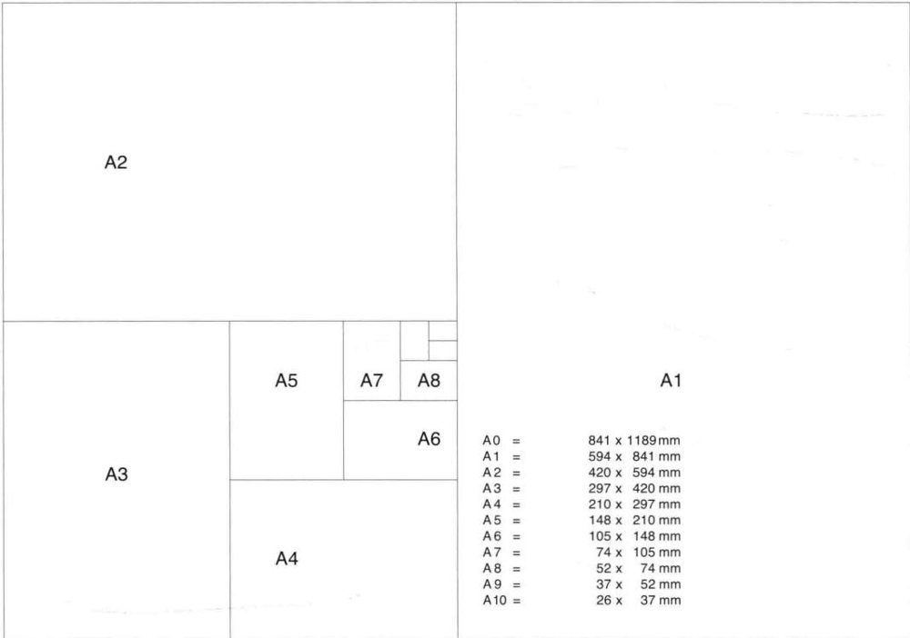
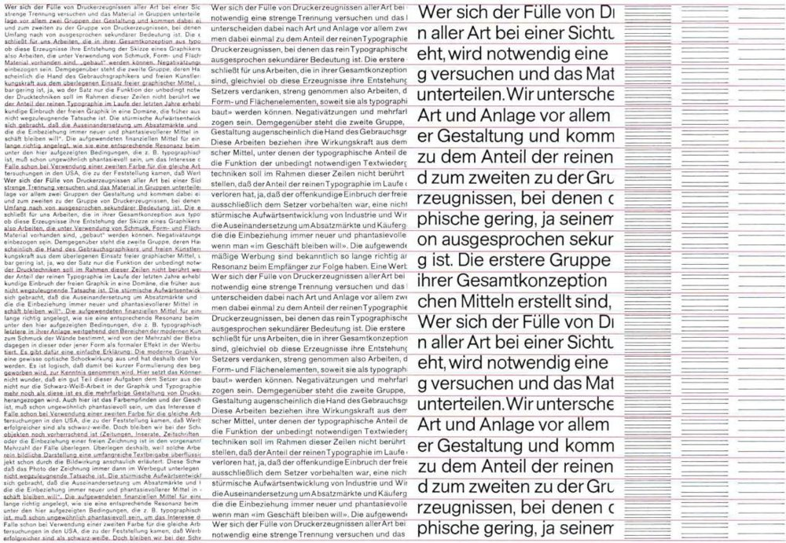
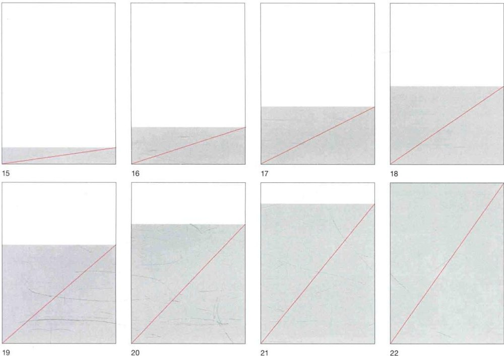
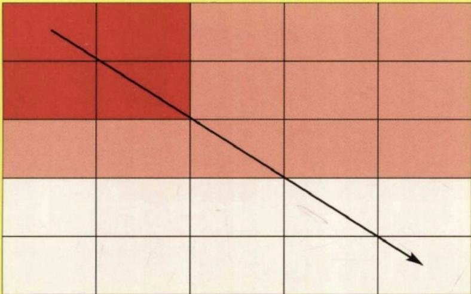
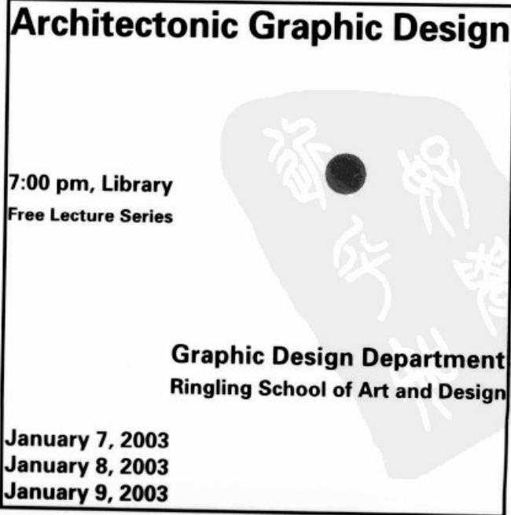
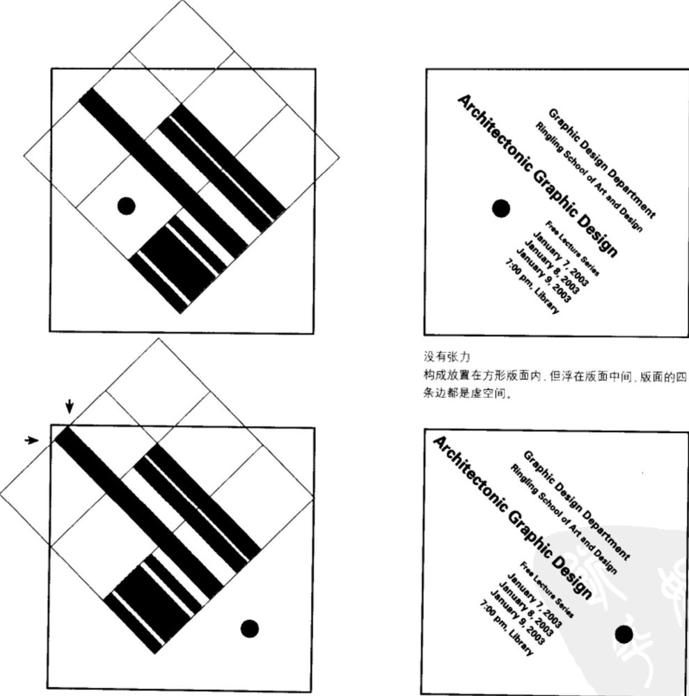
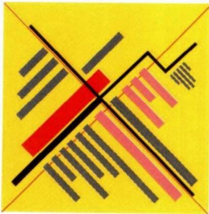
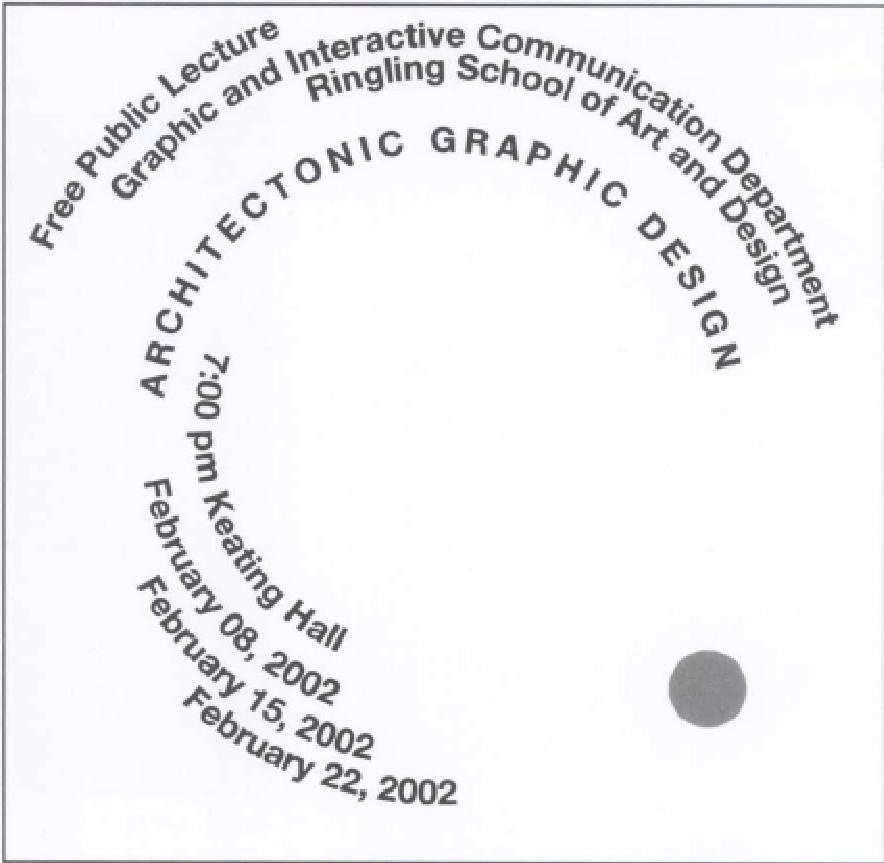
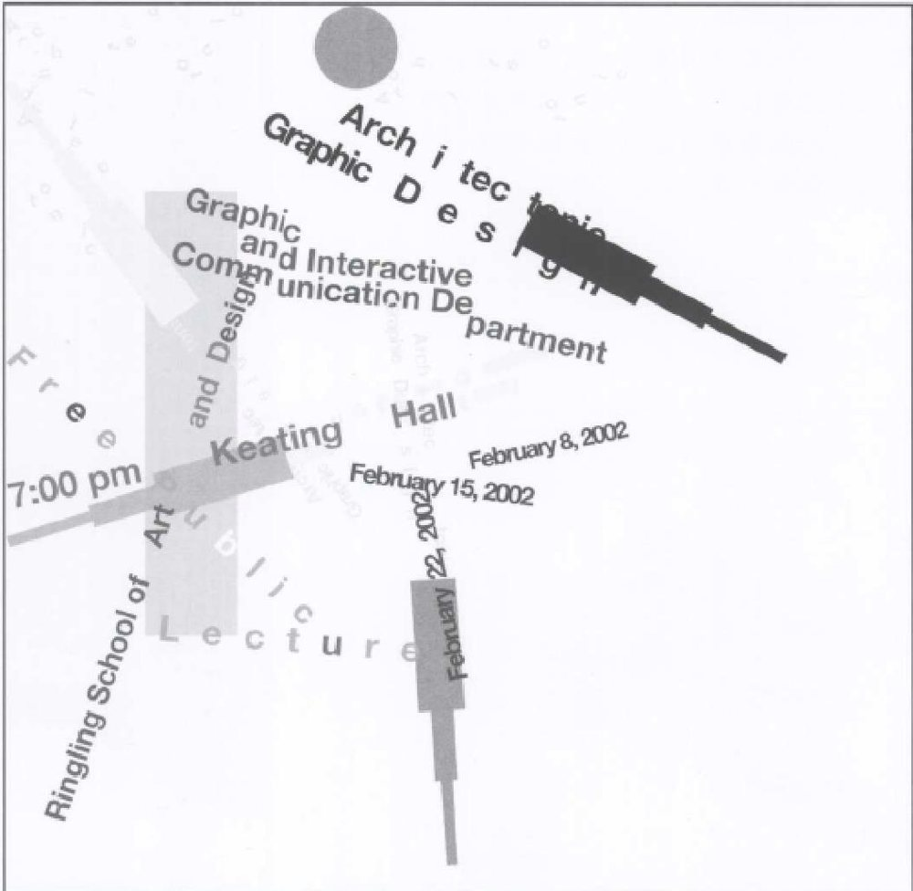
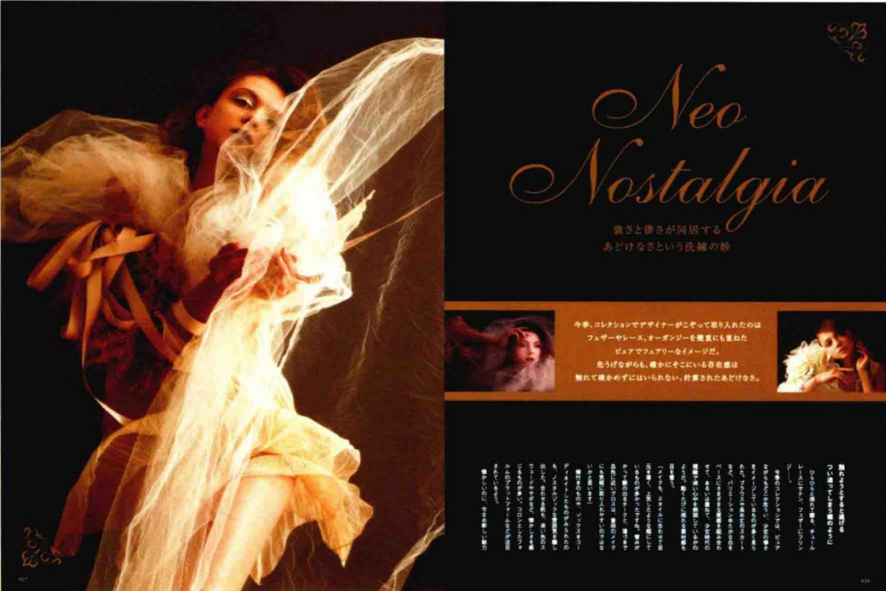
5. Source Bookshelf
Suggested reading order: 《設計入門教室 1：版面設計的原理》 → 《破譯網格設計》 → Müller-Brockmann, 《平面設計中的網格系統》 → Elam, 《編排設計教程》 → 《秩序之美》 (web) → David Carson (to understand the opposite of the grid).
Show 48 titles
- 日本版式設計原理_p159 - 跨平台的視覺設計版式設計原理 - [019]破譯文字編排設計 - [020]破譯網格設計 - [029]美國視覺設計學院用書：圖形、色彩、文字、編排、網絡設計參考書 - [048]版式設計：日本平面設計師參考手冊 - [050]超越平凡的平面設計：怎樣做好版式 - [060]版式設計+給你靈感的全球最佳版式創意方案 - [074]柵格系統與版式設計 - [079]國際版式設計基礎教程 - [080]七日掌握版面設計基礎 - [094]美國編排設計教程 - [120]平面設計中的網格系統 - [127]版式設計風暴Ⅱ - [150]網格系統與版式設計 - [172]創意版式設計_王紹強 - [174]版面設計的原理_設計前必須知道的事情 - [176]版式設計全攻略(佐) - [177]進階理解版式設計 - [178]版式設計：合適最好 - [179]版式設計從入門到精通 - [180]版面設計網格構成 - [181]版式設計原理_案例篇：提升版式設計的55個技巧 - [184]秩序之美_網頁中的網格設計 - [187]日本版式設計原理 - [254]版式設計法則 - [255]版式創意大爆炸 - [256]版式設計+2版式創意方案 - [351]版式設計風暴 - [商業版式設計的方法] - 版式編排設計 - 版式設計 - 今日版式 - 印刷的終結：戴維·卡森的自由版式設計 - 國際平面設計基礎教程-GRIDS網格設計 - 國際平面設計基礎教程-LAYOUT版式設計(第2版) - 版式設計-www.afx365.com - 版式設計原理 - 版式設計原理-全綵教程 - 版式設計實用手冊-www.afx365.com - 版式設計實用手冊.SUNI視覺設計.全綵版 - 版式設計從入門到精通-www.afx365.com - 版面設計黃金法則 - 破譯文字編排設計-www.afx365.com - 秩序之美——網頁中的網格設計英文版 - 編排設計教程 - 設計入門教室 1 版面設計的原理 - 超越平凡的平面設計 版式設計原理與應用6. Study Cues
- Using 10 pt type on 14 pt leading for the body text, design a 6-column × 8-row modular grid for an A4 magazine. Write down the column width and the gutter.
- Take one set of material (a headline, three images, 500 words of body text) and make two versions: one with a high jump rate and one with a low jump rate.
- Use three of Elam's eight systems to sketch three thumbnail posters for the same lecture.
- Take a magazine, draw its grid lines on a photocopy, and point out where it deliberately "breaks the grid".
- Explain why the foot margin is the widest in traditional books.
- Design a 12-column desktop grid for a website, then explain how you would reorder the priority of the content on a phone.
7. Each Book
Each book in the bookshelf is described below. Every title above links to its section.
日本版式設計原理_p159
Scope. This is a scan of 《日本版式設計原理》. What you can see is mainly the layout chapter, which uses before-and-after comparisons to show what makes a magazine spread organised, interesting and clean. It does not build a mathematical grid. Instead it revises page by page for each client and readership (a men's magazine for readers in their thirties, a homewares magazine for women in their twenties, a lifestyle magazine). For the full set of image techniques, see 《日本版式設計原理》 later on.
Main ideas
- When there are many images, first contain them in a square coordinate grid. Change the way you divide it, and the character of the layout changes with it.
- If every image is the same size, the layout has no tension and release. The sizes must differ before you can see what is primary and what is secondary.
- Interest does not come from adding decoration but from the content: the page uses a vintage texture and a border in French flag colours only because it introduces French flea markets.
- A clean, elegant look relies on white space, controlled type sizes and few bright colours. Heavy bold type plus big red turns a chilled tea into shouting.
- When a vertical headline, a horizontal summary and vertical body text run together, the eye's path breaks. The text direction must let you keep reading.
Methods
- First write down the impression the client wants (organised, interesting, upmarket), then find three places on the "before" page that go against it.
- For pages with many images, lay down the square grid first, then enlarge just one image.
- Check the gutter of the spread: do not let the fold cut the main image in half.
- After revising, reread the page in the target reader's words: have the opening date, the product names or the tone been drowned out by colour?
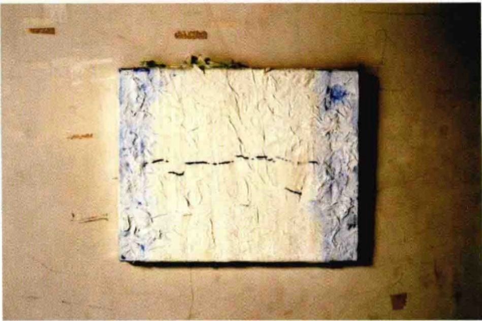
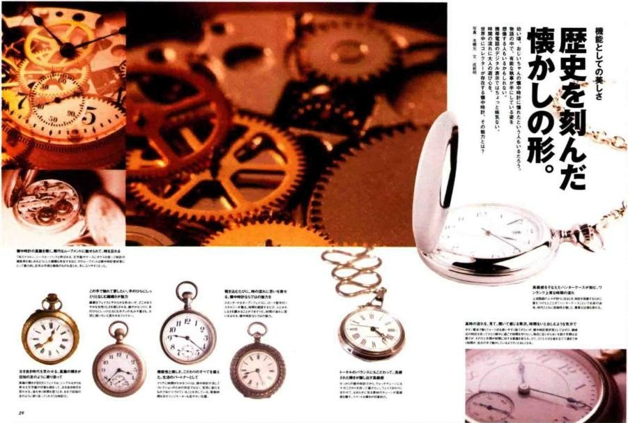
Study cues
- A page has six images. Write down which one you would enlarge and how you would fit the other five into the square grid.
- Set the same phrase, "Ise cold tea", once in heavy bold with big red and once in a light weight with generous white space. Which looks like a premium food product, and which looks like a sale sign?
跨平台的視覺設計版式設計原理
Scope. This book starts from "what is layout?" and compares magazines, books, posters, direct mail and business cards, as well as web pages, phones and tablets. Its focus is the difference between an undesigned and a designed version of the same copy, and the need for the designer to agree the final form clearly with the editor, the printer or the person in charge of the website. It is useful for setting up a working order before your first real job.
Main ideas
- Layout is not mechanically lining up ready-made material. First know which medium it is for and what it has to carry.
- However good the content, the wrong layout lowers the value of the information. The book shows an undesigned and a designed version of a recruitment page for a children's English class.
- Pages are usually hard to read for three reasons at once: the typeface does not suit the content, the size and position of the images give no lead element, and readers do not know where to start.
- Each medium has different constraints. For paper, check with the printer; for screens, check with the person in charge of the website.
- Dividing up the picture area is the first step: within a limited layout, decide first how the elements form groups.
Methods
- Before you start, write three lines: medium, reader, and who produces the final output (print or web).
- Label an existing draft "hard to read", then change only the type sizes, the alignment and one main image. Do not change the illustration style first.
- Split headline, selling points and body text into three levels, with only one type size per level.
- Draw one thumbnail each for a book, a poster and a phone, and check which level disappears on a small screen.
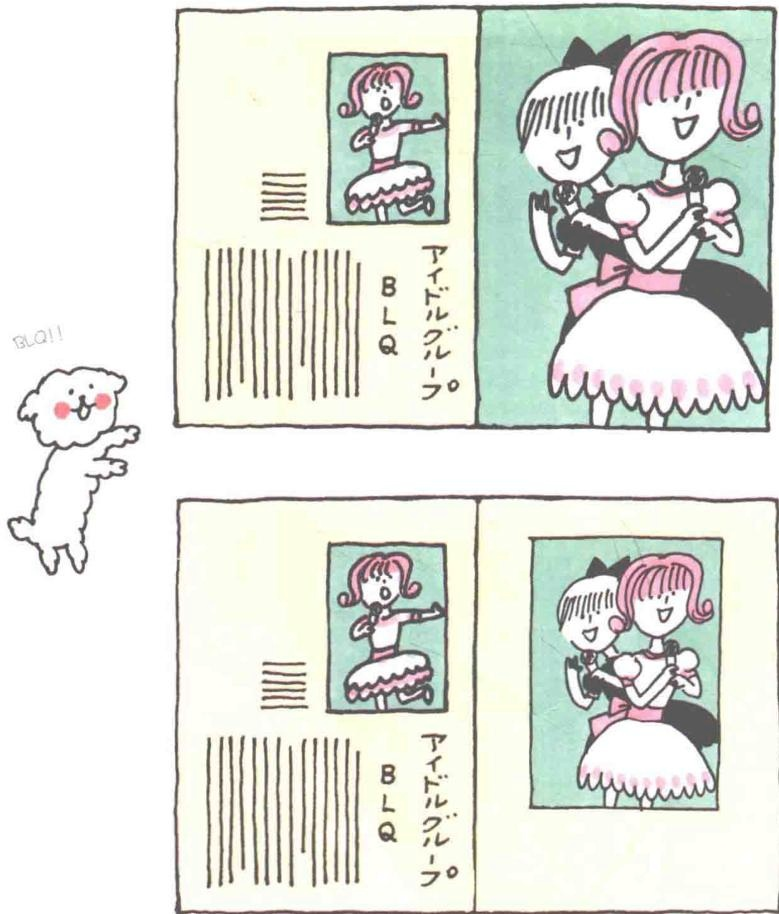
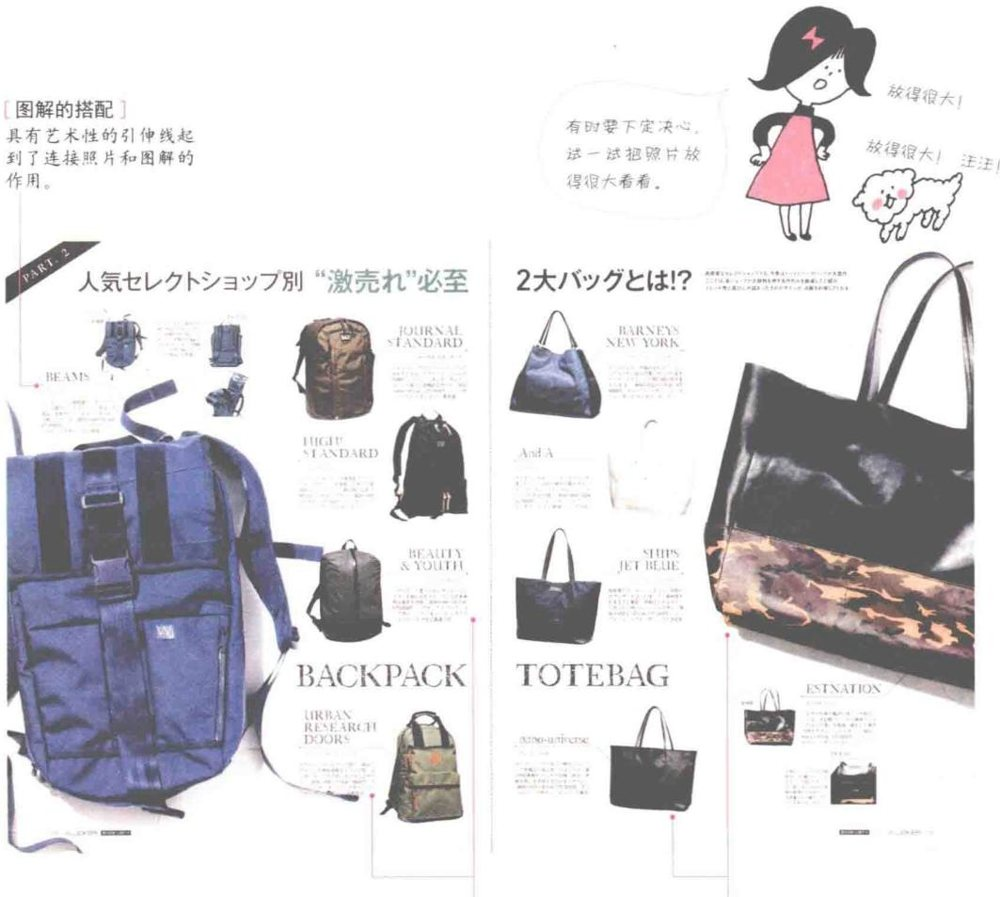
Study cues
- Take a piece of recruitment copy and list three reasons readers would get lost in it before it is designed.
- For the same event information, note which sentence must be seen first on the poster and which on the phone.
破譯文字編排設計
Original title: Typography Workbook: A Real-World Guide to Using Type in Graphic Design
Author: Timothy Samara
Scope. This is Samara's handbook on type, not a set of grid construction drawings. It sorts its principles into letters, words, paragraphs and pages, each with an explanation and examples, about a hundred in all. The division of labour with 《破譯網格設計》 is this: that book decides how columns and modules are built, while this one decides how type works inside those cells. Some of the principles contradict each other, and the book says so up front.
Main ideas
- Learn the rules that professionals agree on before you earn the right to break them. The calligraphy teacher Donald Jackson is quoted in support: rules can be broken successfully.
- The principles of type hold across media. As screens get smaller and readers get older, the demand for clarity only goes up.
- Letters can be used as shapes, and so can their counters (the negative space), with no need to draw anything extra.
- Typefaces carry historical associations. Choosing a typeface means choosing a tone of voice, not just picking something that looks good.
- The medium rewrites the rules: very large type on a poster can bleed and be tightly tracked, while type on a label has to be layered through weight and leading.
Methods
- For a type assignment, check at four levels: letter, word, paragraph and whole page. Do not just check whether the headline looks good.
- Each time you "break a rule", write down which rule it breaks and why readers can still understand the result.
- If a headline has to fill the layout, tighten the tracking first, then consider adding one colour, rather than adding another illustration.
- For information-heavy labels, layer with size and weight, use leading only to separate the groups, and keep the column itself tight.
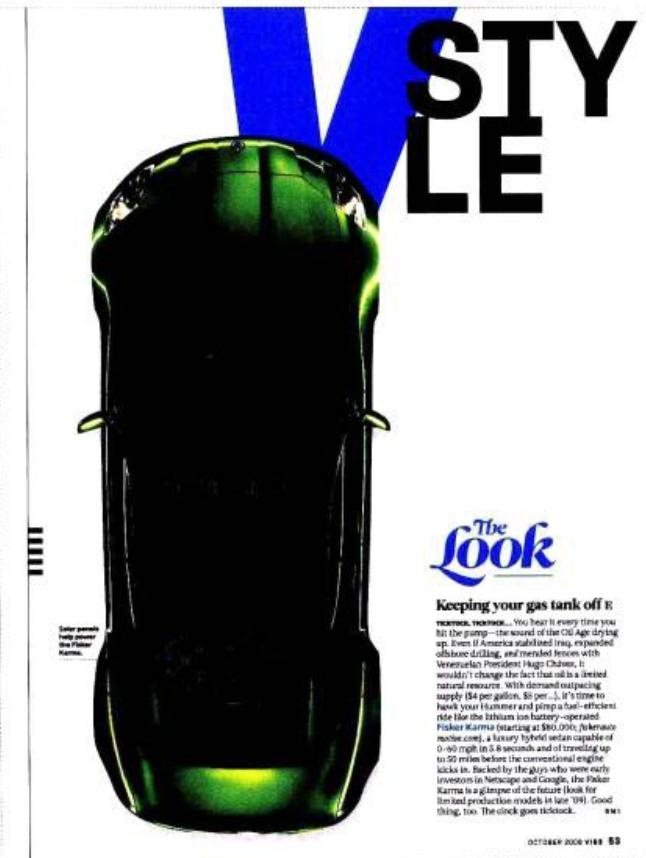
Study cues
- Choose a letter and make a mark using only its counter, without adding any other shapes.
- Write down two principles of type that conflict with each other, and explain which one a poster should follow.
破譯網格設計
Original title: Making and Breaking the Grid: A Graphic Design Layout Workshop
Author: Timothy Samara
Scope. This is Samara's grid handbook. It fills in what Müller-Brockmann did not develop: how to choose a grid today. The book first names the parts (columns, modules, white space, spatial zones, flowlines, markers), then covers the basic structures, and then asks you to assess your material first. What it adds is an order of decisions: content and constraints first, the grid second. It also shows how to be considerate to readers by not using too many type styles.
Main ideas
- Whether to use one column or two depends on the weight and complexity of the text, not on how many columns the designer wants.
- Count your constraints first: finished size, page count, colours, charts, headings, text boxes.
- Continuous reading needs a steady text texture. Do not give each column its own type size, leading, column width and line-breaking method.
- If a column is too narrow and also justified, gaps open up between words. It is better to use smaller type or switch to ranged left.
- A few sizes and weights are enough for hierarchy. With too many styles, readers cannot find the main point.
Methods
- First work out how much area the body text needs; only what is left goes to images and tables.
- For detailed listings such as catalogues and schedules, use coloured modules to separate dates, web addresses and calls to action, rather than changing the typeface for each item.
- For long texts, check the number of characters per line; if the column is too narrow, give up justification.
- When you finish, count the type styles. If there are more than three, cut back to headings, body text and notes.
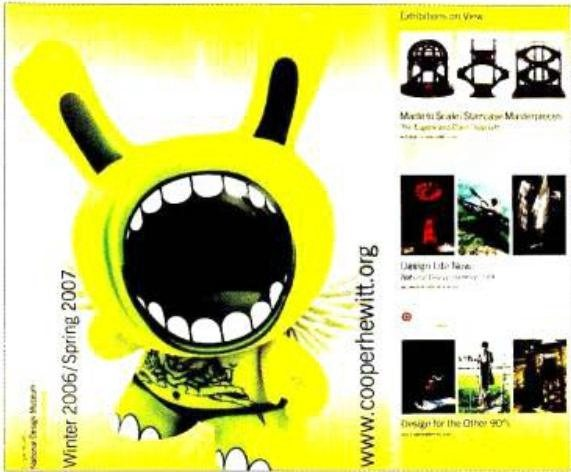
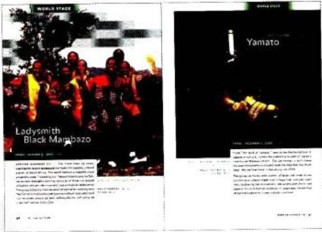
Study cues
- How many columns should the inside pages of a novel with nothing but long text use, and how many a product catalogue with both tables and images? Give your reasons.
- Cut the five type styles on a page down to three. Mark which three stay and which level of information each one handles.
美國視覺設計學院用書：圖形、色彩、文字、編排、網絡設計參考書
Original title: Graphic Designer's Essential Reference: Visual Elements, Techniques, and Layout Strategies for Busy Designers
Author: Timothy Samara
Scope. The English title is Graphic Designer's Essential Reference. It is not another grid textbook but a studio quick reference: form and space, scale and contrast, visual hierarchy, layering, symmetry and asymmetry, and image treatment. Compared with 《破譯網格設計》, what it adds is visual strategy beyond the grid, for handling negative space, sequence and photographs.
Main ideas
- When composing, see objects first as points, lines and planes, not as "a teapot or a spoon".
- Negative space is a shape, not a background waiting to be filled. Ask whether the gaps are tight or loose, and whether they run parallel to the solid forms or against them.
- Hierarchy comes from a clear order, not from making everything big.
- A set of related items (for example a series of CDs) can change its images, but the logic of the forms and the typefaces should echo each other.
- Change the framing of the same subject (narrow vertical, three-quarter, close-up) and the sense of division, diagonals and symmetry changes completely.
Methods
- At the sketch stage, fill in the photos as silhouettes, keeping only points, lines and planes, and then decide the layout.
- Trace the negative shapes along the four edges of the layout and between the objects, count them, and remove the most fragmented ones.
- When setting the order, keep only one first glance: the largest, the darkest or the most isolated element.
- For a series, first write one shared visual rule, then let each piece change its content.
Study cues
- Choose a still life and write down one point, one line, one plane and two negative shapes in it.
- A set of three posters may only change the photograph. Write down the visual rule you would not change.
版式設計：日本平面設計師參考手冊
Scope. This book ties layout ideas to InDesign operations: triangular composition, point symmetry and visual order, as well as data merge, master pages, paragraph styles and punctuation squeezing. What it adds is "how an idea lands in the software", not grid theory. It suits people who already know the effect they want but not where to find the command.
Main ideas
- Triangular composition anchors the page and gives stability; point symmetry gives lightness. Do not mix the two kinds of order into one system.
- If type on a full-bleed photo clashes with the colours of the image, use high-contrast white or solid black type rather than adding another block of colour.
- A large headline can interlock with the body text and take up the height of a whole paragraph. The jump rate should match the energy of the background: do not pair a quiet image with a screaming red.
- For repetitive pages (greeting cards, envelopes), use data merge. The type is still a design decision; do not fall back on a print function that only offers the default font.
- Paragraph styles, character styles and punctuation squeezing are part of layout. Without styles, spreads cannot stay consistent.
Methods
- For each layout idea, make one Before and one After; the After changes only one variable (composition, type colour or jump rate).
- When building master pages, put the page numbers, column guides and bleed on the master, so you do not have to drag them onto each text page.
- For projects such as postcards, first organise the data in a table, then generate the pieces with data merge, and finally spot-check only the type and the line breaks.
- For Chinese or Japanese copy, set up separate punctuation squeezing; do not reuse the default spacing meant for English.
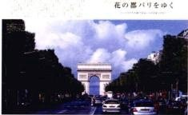
Study cues
- For a sports photo and for a still life, write one sentence each: should the headline use a high or a low jump rate?
- List four things you would put on an InDesign master page, and one thing that must stay on the text pages.
超越平凡的平面設計：怎樣做好版式
Original title: Before & After Page Design
Author: John McWade
Scope. This is a Before & After book of layout projects, with chapters on brochures, letterhead and business folders. McWade covers paste-up and platemaking through to the arrival of desktop publishing in 1985, but the main text teaches how small business pieces can have one visual centre of gravity. It differs from Beyond Ordinary Graphic Design: Layout Principles and Applications later on: that book breaks down methods (focal point, proximity, taking colours from images), while this one applies the methods to whole printed pieces.
Main ideas
- Design should serve the one sentence you really want to say. A promotional page can use an outstretched hand and a huge "sold", with the centre of gravity in the middle of the page.
- Making an insert from the same paper stock adds content without starting another print job. What you save is budget, not ideas.
- A small insert with mixed information should let different customers each find their own layer, rather than turning into a poster.
- Cutting, copying and pasting have existed since the days of handwork; software has not done away with composition.
- Business layouts can be small, but every page should point to an action that has not happened yet (a meeting, a partnership, a sale).
Methods
- First write down the action the page should bring about, then put it at the visual centre with one image and one word.
- When adding pages to a brochure, prefer an insert on the same paper, and check the folding and the cost.
- For letterhead and folders, fix the position of the logo, the address and one rule first, and only then talk about decoration.
- Mark the visual centre of gravity on every page. If it is not on the word you want, change the size, not the colour scheme.
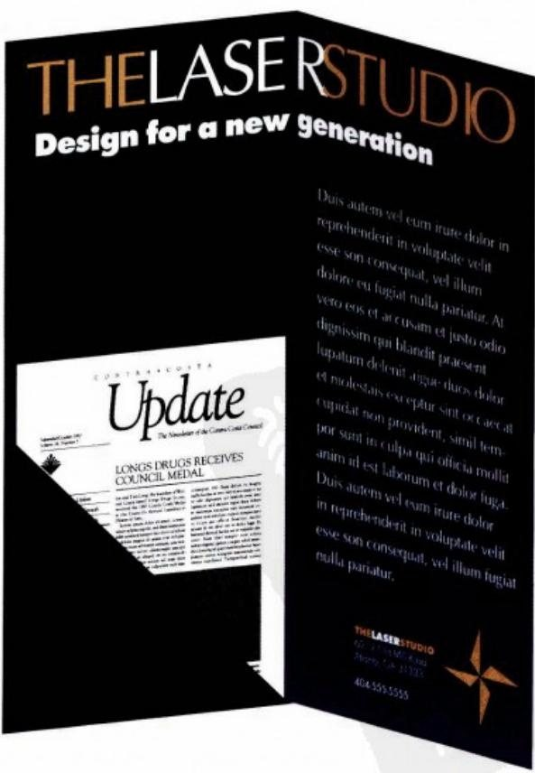
Study cues
- Design a cover for a meeting that has not started yet: which image and which word go in the centre?
- An eight-page booklet needs two more pages of promotion. Explain whether you would change the paper, and why.
版式設計+給你靈感的全球最佳版式創意方案
Scope. This is a collection of design projects, arranged by category starting with books; it is not a step-by-step tutorial. As you read, ask what reading or production problem each project solves. The difference from 《版式設計+2》 is that this volume starts with books and describes how designers split existing material into several strands that can be read side by side.
Main ideas
- A book is not just images and text placed into a format. Size, typeface and materials all change the result; the layer most often overlooked is the micro level.
- The approach of Liner Notes is to split the original book into strands such as "letterpress" and "views", and to build a "stage" with pauses so that several strands of content can be read in parallel.
- This idea of a stage comes from Brecht's epic theatre: the same kind of question is played again in a different setting, so readers do not get absorbed into a single narrative.
- Binding can also be a concept. Using fewer staples is sometimes clearer than adding another image.
- When looking at a collection of projects, separate "structures you can borrow" from "surfaces you should not copy".
Methods
- Take notes on each case in three lines: what the constraints are, what the structure is, and whether any information is left once the style is removed.
- When you meet a design with "three strands in one book", draw which strand the reader follows on the first reading and which on the third.
- Only collect techniques whose purpose you can name (parallel reading, binding, stage-like pauses).
- For your own book, decide the format and the paper first and then the type, not the other way round.
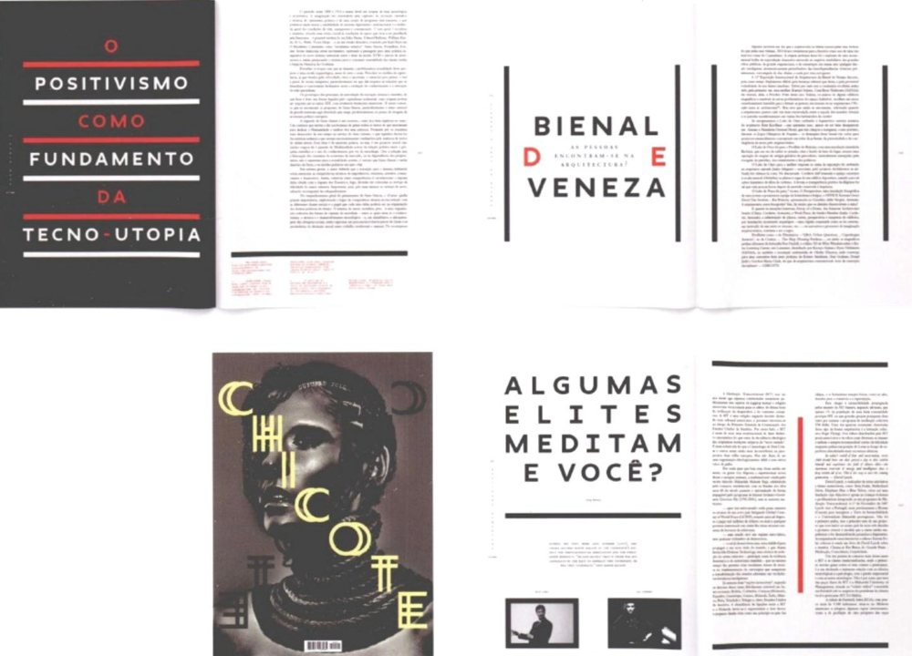
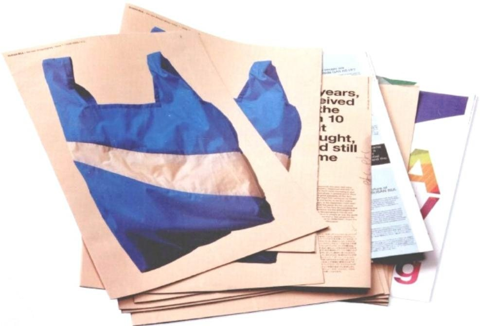
Study cues
- Choose a case and write down what structure would remain if the decoration were removed.
- In your own next book, which constraint (page count, staple binding, two languages) could become the form?
柵格系統與版式設計
Original title: Grid Systems: Principles of Organizing Type
Author: Kimberly Elam
Scope. These are Elam's composition exercises. They are not a publication grid derived from the body text in Müller-Brockmann's sense, nor her later eight typographic systems. Students arrange rectangles in 1:2:3 proportions and circles on a square format, practising grouping, voids, edges and axes, and the rule of thirds. What it adds is getting the relationships right with very few elements. For the analysis of historical posters, see the other scan of this book ([150] in the bookshelf).
Main ideas
- The length of each element must land on the horizontal grid units; elements may not overlap or extend beyond the format. The constraint itself is the brief.
- The 1:2:3 proportion makes the size hierarchy clear. The circle's diameter is about a quarter of a small grid unit, and also close to the width of the longest rectangle.
- Without grouping, viewers have to look at seven or eight things at once, and the voids are many and fragmented. After grouping, the empty spaces become fewer and larger.
- Rectangles of the same width can form a group, and so can different ones. Grouping is for rhythm, not for locking similar items together.
- Connections from edge to edge and from axis to axis are more reliable than putting objects where they "look balanced".
Methods
- Start with a square format, not a rectangular sheet, so you are not distracted by the proportions of the paper.
- Change only one kind of relationship at a time: group first, then check how many voids there are.
- Try three arrangements of two medium rectangles: one horizontal and one vertical, both horizontal, both vertical. Keep the version with the largest void.
- Outline the empty spaces in red pen. If there are more than six and they are all thin, keep grouping.
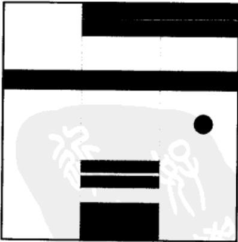
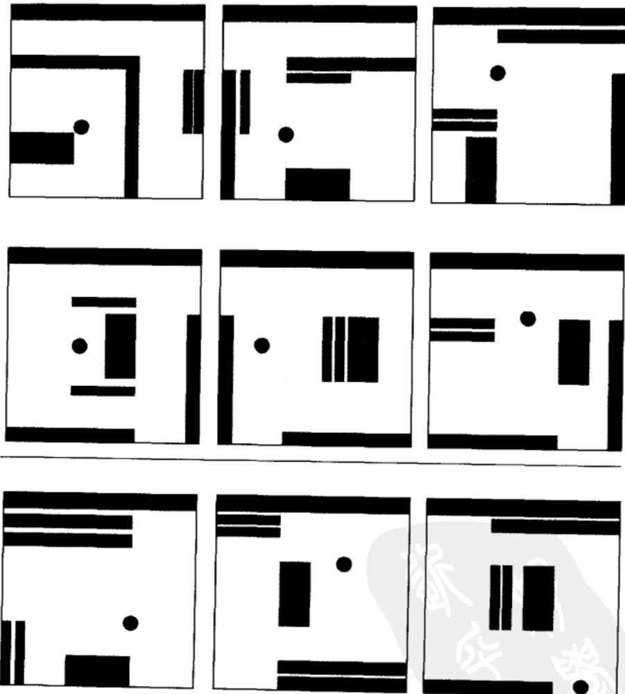
Study cues
- Place three 1:2:3 rectangles on a 3×3 grid. Write down which position turns the empty space into one area rather than three.
- Explain what problem "grouping" solves and what problem "alignment" solves.
國際版式設計基礎教程
Original title: Best Practices for Graphic Designers, Grids and Page Layouts: An Essential Guide for Understanding and Applying Page Design Principles
Authors: Gavin Ambrose, Paul Harris
Scope. This is the grid volume in AVA's basics series, and it opens with a quotation from Müller-Brockmann: people instinctively put information in order. What it adds is not a new formula but a set of names for the parts you can point to, plus case studies from working designers. Compared with the Grids volume, what you see here are the grid types (manuscript, multi-column, modular) and "how to avoid being cropped on small screens"; Grids says more about why grids save decisions, and about active and passive space.
Main ideas
- The job of layout is to make complex information readable. Typeface, colour and images can add appeal, but cohesion comes from a structure that has been thought through.
- You must be able to name the parts: margins, flowlines, columns, modules, spatial zones, markers. If you cannot name them, you cannot fix them.
- Manuscript grids, multi-column grids and modular grids are different tools. First see which kind of reading the material calls for, then choose.
- Massimo Vignelli's view appears in a case study: a strategic grid is not a style option but a condition for the design to work at all.
- Web pages and mobile screens need layered grids, so that key content stays on screen even in the worst display conditions.
Methods
- When analysing any page, mark the six parts above in pencil, and write "none" for any that are missing.
- In case-study notes, record decisions, not style: why did they use this number of columns?
- For screen designs, draw in the height of the first screen; key sentences must not fall below that line.
- After quoting the classics, redo one manuscript grid and one multi-column grid with your own material.
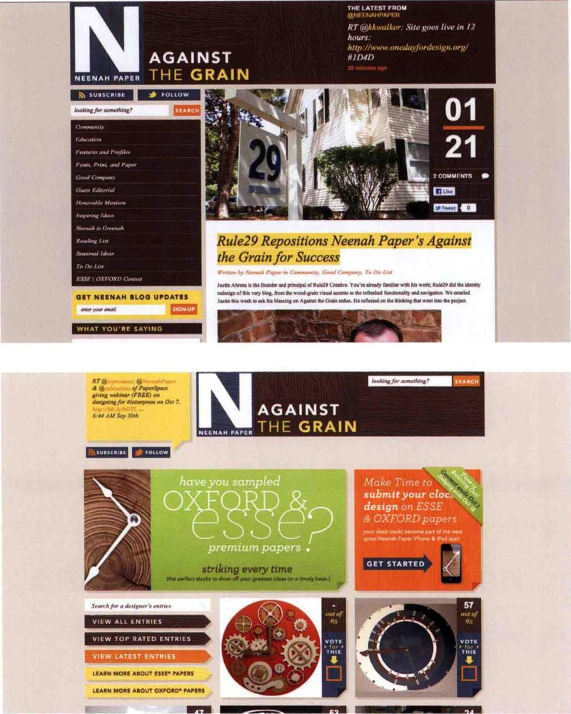
Study cues
- On a magazine spread, mark the margins, the columns, the flowlines and one spatial zone.
- Put a sentence that must be seen onto the first screen of a phone. Write down what you cut to make it fit.
七日掌握版面設計基礎
Scope. This is a seven-day introduction by Japan's Visual Design Research Institute. It argues that most of a layout's success depends on the "choice of style", not on decoration added afterwards. Each day the same content is given different styles: cheap cosmetics, a trustworthy business card, a club recruitment poster. It teaches tone and visual strength, not column calculations.
Main ideas
- Choose the wrong style and the information is communicated wrongly. A free format with lots of white space does not suit a serious traditional event.
- Enlarging the name on a business card raises its energy and its sense of trust; shrinking the type, increasing the white space and centring everything makes it upmarket. The two go in opposite directions.
- Visual strength is how strong the images are compared with the text. Bright, clear illustrations rate highest; landscape photos are often lower.
- Adding just one suitable illustration can change how friendly a recruitment poster feels. You do not need to change all the type first.
- Judgement means deciding whether the content should feel popular, professional or upmarket, and then choosing the style.
Methods
- Make two versions of the same business card: one with an enlarged name, one with smaller type and more white space. Ask someone to say which version the sense of trust comes from.
- Before you start, choose a style name (aspirational, upmarket, friendly), and only then begin work.
- If a page feels too cold, add just one image with high visual strength; do not add colour blocks, diagonals and borders at the same time.
- Check one design each for a traditional event, a children's event and a luxury product by asking "would this style say the wrong thing?"
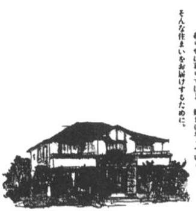
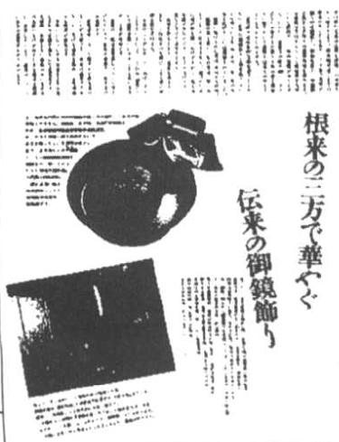
Study cues
- Choose one style each for a graduation ceremony and a club recruitment drive, and write down the style you must not use.
- Explain visual strength. Rank an illustration, a portrait photo and a seascape photo from highest to lowest.
美國編排設計教程
Original title: Typographic Systems
Author: Kimberly Elam
Scope. This is a scan of Elam's 《編排設計教程》. The summary table of the eight systems is in the other 《編排設計教程》 section; what this copy contributes is a thorough treatment of the axial system and of the circle. A circle can act as a starting point, a stopping point, a source of tension or an organiser, without needing columns first. It fills in something that neither Müller-Brockmann nor Samara treats as a main topic: poster-style type can be organised with an axis and a few abstract elements.
Main ideas
- If you always use the software's default leading, hierarchy will never appear. Design happens while you adjust the leading and the spacing.
- The axial system: lines of type hang to the left or right of a straight axis. Several axes along the page edges still count as the same kind of order.
- A circle placed in the top left quarter often becomes an entry point; placed at the bottom right, it often becomes a stopping point.
- A circle close to lines of type creates tension, because the eye wants to leave the circle to read the words.
- Abstract elements such as lines and tones handle emphasis and layering, so you do not need many typefaces.
Methods
- Using the same text and changing only the leading, make loose, medium and tight versions, and choose where the boundaries between groups should fall.
- Axial exercise: start with one axis, then try three axes along the page edges; the text must still read along the axes.
- Move only the circle, not the type, to make one version with a starting point and one with a stopping point.
- Keep all the type at one weight, so that the organisation has to come from the reading path rather than from bold.
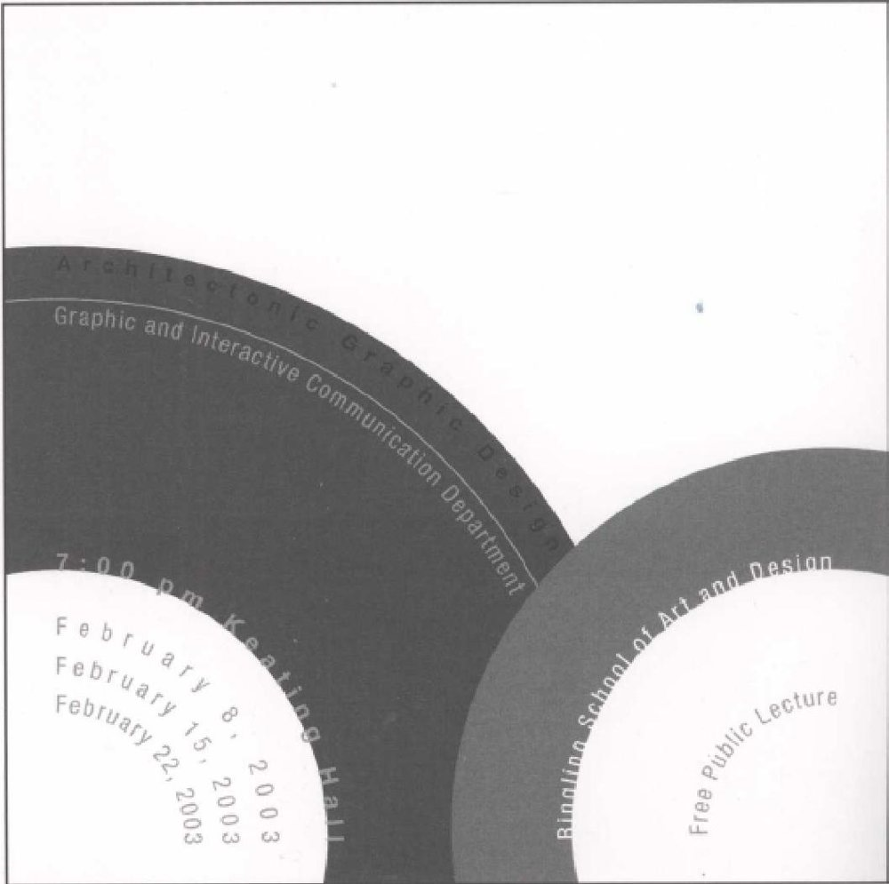
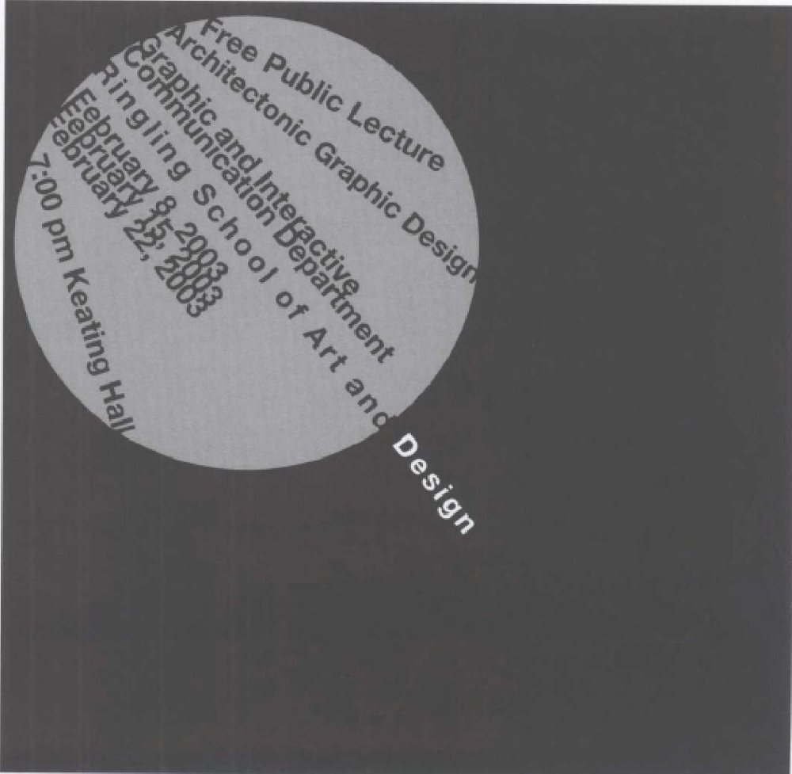
Study cues
- Make an axial poster with eight lines of type. Is the axis on the left or the right? Write down where reading begins.
- Move a circle from the top left to the bottom right, and explain how the entry point and the stopping point swap.
平面設計中的網格系統
Author: Josef Müller-Brockmann
Scope. This is the working handbook of the grid classic: why grids exist, typographic measurement, body and display typefaces (from Garamond and Baskerville to Helvetica and Univers), and only then the structure of grids. What it adds is an attitude and a method of calculation: the grid is an objective order that can be analysed, and columns and modules should be derived from the measurements of the text. For the theoretical appendix on proportion and picture structure, see 《版面設計網格構成》.
Main ideas
- Most people use grids without knowing why they exist. If you do not study the principles, you will only treat grids as decorative lines.
- Using a grid expresses a position: systematic, clear, replacing the subjective with the objective, with work the public can understand.
- The choice and measurement of type is not an appendix. The body text size and leading determine the column width, and only then does the grid hold up.
- A grid helps designers solve problems faster and lets others carry the design on, instead of it being a one-off flash of inspiration.
- What you show the client is a model. Prefabricated units of equal size reduce misunderstandings on both sides, and the structure can still be adjusted.
Methods
- Set the body typeface and leading first, then measure a sensible number of characters per line, and only then decide the number of columns.
- Test the same body text in two serifs and two sans serifs, and compare their grey values, not their "personality".
- When talking to clients, bring a page model that can be taken apart, not just a rendering.
- On every page, check that the edges of the images fall on the horizontal lines derived from the leading.
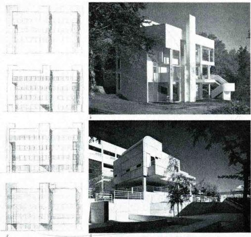
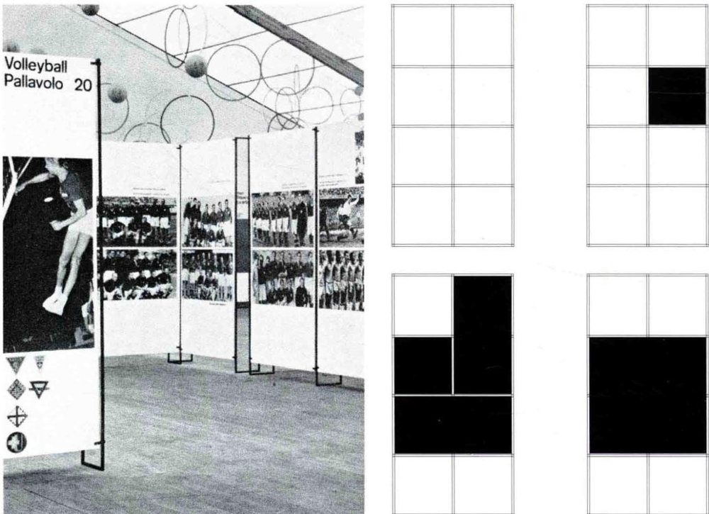
Study cues
- Using 10 pt type on 14 pt leading, explain why you are not yet in a position to decide on "six columns" first.
- In one paragraph, explain how the grid embodies "the objective replacing the subjective", rather than "every page looking the same".
版式設計風暴Ⅱ
Scope. This volume is a picture collection of layouts. The scan has almost no chapters on method; what you can read is mostly magazine covers from around 2006 (for example the July issue of PC World) and fragments of contents pages, and the pictures carry a resource site's watermark. Treat it as a sample of styles, not a tutorial. The one sentence of method is clearer in the captions of 《版式設計風暴》.
Main ideas
- Consumer magazine covers have a fixed hierarchy: masthead, price, off-sale date, one main cover line and several secondary cover lines.
- The main line (for example "product of the year" or "how to build it") takes the largest area; the other cover lines queue up by type size.
- Technology magazines often have many short lines competing for space. Without hierarchy, the cover turns into a contents page.
- The value of a picture collection is seeing how real covers set an order within one second, not looking at a particular decoration.
- Do not copy letter-spacing from watermarked or incomplete pages. Borrow only the hierarchy you can see clearly.
Methods
- Cover up the cover image and keep only the text; mark the first, second and third glance.
- Count the cover lines. If there are more than seven, point out which ones could move to the inside pages.
- Compare two magazines: in which one do the price and the off-sale date steal attention from the main line?
- When copying, redraw the structural lines; do not trace the watermarks and scanning marks.
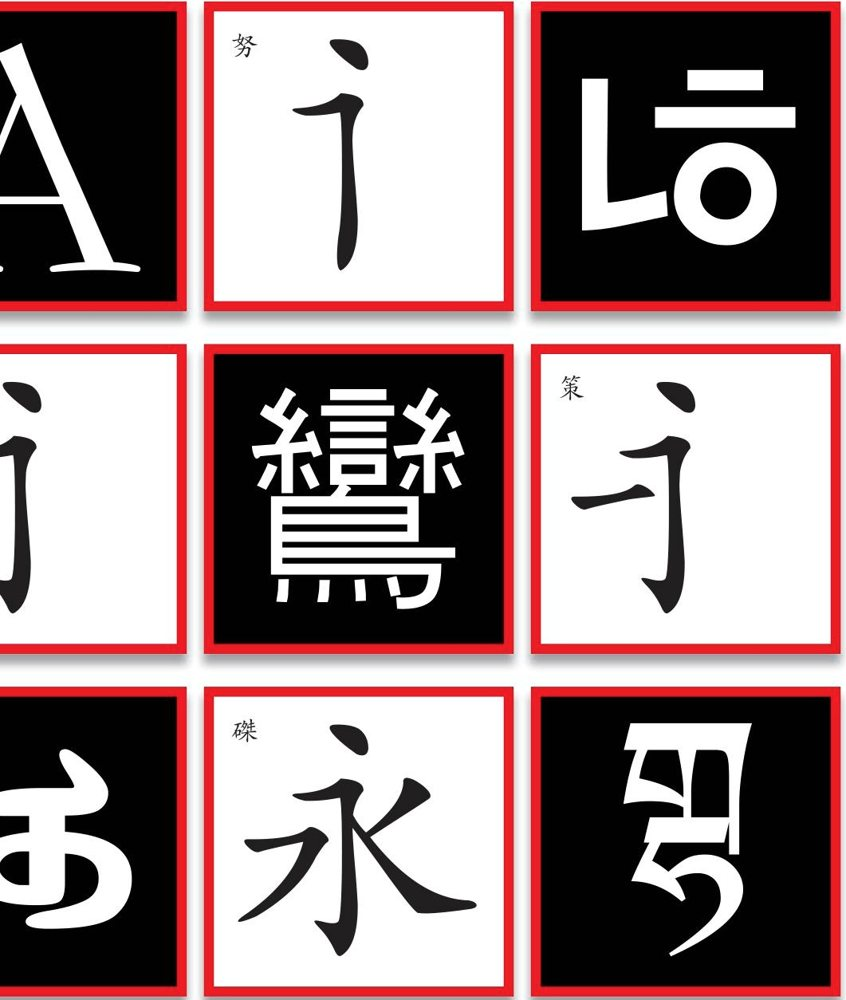
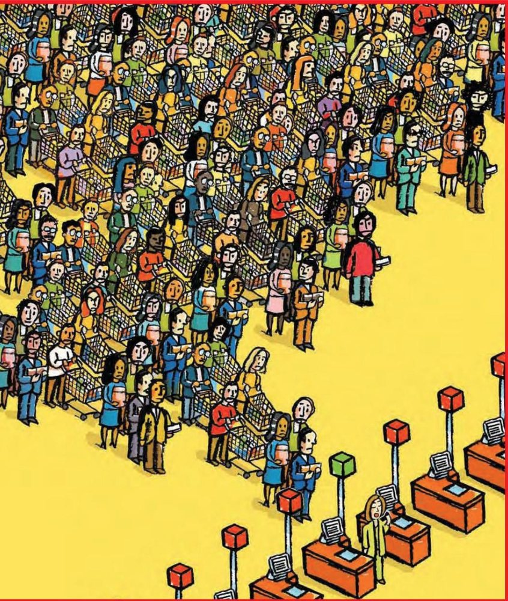
Study cues
- Using the logic of covers like PC World, write one main cover line and three secondary lines for a student magazine, and set the order of their type sizes.
- Explain why you would not copy the letter-spacing from this scan.
網格系統與版式設計
Original title: Grid Systems: Principles of Organizing Type
Author: Kimberly Elam
Scope. This is the same Elam book as the other 《柵格系統與版式設計》 scan ([074] in the bookshelf): the 3×3 grid, the rule of thirds, grouping and voids. What this copy adds is the second half, which uses the same way of seeing to read other people's work (Zurich posters, Kandinsky, National-Zeitung, a Bauhaus catalogue), plus case studies such as an AIDS poster, the Cuban Revolution, Levi's jeans and "If the glove doesn't fit". What it adds is analysis, not another set of parts.
Main ideas
- A grey block of set text is itself a rectangle. Layout has to communicate and also manage the texture of these rectangles.
- The four intersections of a 3×3 grid are natural focal points. Whichever point a level sits near becomes more important.
- Exceptions are allowed: an element rotated so that it clashes with the others is variety within unity. But not every piece can be an exception.
- Willi Kunz divides typography into the macro level (clear and obvious) and the micro level (subtle, seen only subconsciously). Both levels need to be designed.
- The case studies are for practising "how the rectangles of this famous layout are aligned", not for collecting styles.
Methods
- Take a historical poster, lay a 3×3 grid over it, and mark the words that fall on the intersections.
- Paint the body text grey and look only at the sizes of the rectangles and how they touch.
- In your own assignment, allow only one "clashing" element, and write down why it is not just tilted at random.
- Describe each case study in two sentences: what the macro level is and what the micro level is.
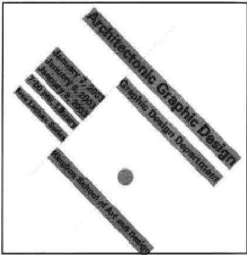
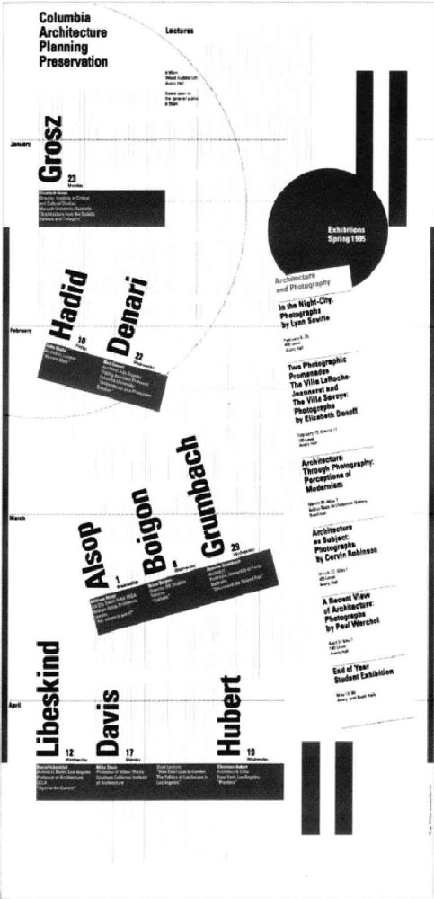
Study cues
- Place a headline and an image on a 3×3 grid so that the headline falls on one of the four intersections. Explain which point you chose.
- Choose a poster you like and write one sentence each on its macro level and its micro level.
創意版式設計_王紹強
Author: Wang Shaoqiang (editor)
Scope. This is a collection of layout projects along the lines of Page Unlimited, edited by Wang Shaoqiang. It covers book design and other work, and the preface appears in Chinese, French, Spanish and Italian. It does not teach grid steps. What it adds is a question for judging work: the difference between good and excellent often lies in the micro level, which is the first thing dropped when time runs short.
Main ideas
- Typography is arranging letters so that they work well and are a pleasure to read. Layout is not just choosing a nice picture.
- Judging design is like judging a chef: making ordinary ingredients taste good is harder than making good ingredients taste good.
- Format, typeface and materials all change the result. Good materials are only the starting point.
- Micro-level treatment (spacing, alignment, paper) separates good from excellent. Most people will not consciously see it, but they will feel it.
- When rushing to a deadline, this is the first layer to be sacrificed, so build time for it into your process.
Methods
- For each case, write down the materials first: format, binding, spot colours or die-cutting. If you have not noted them, you have not finished looking.
- Redo a page from a case you like using "ordinary materials", keeping only its structure.
- Before handing in, set aside one round for adjusting spacing and alignment only, with no image changes allowed.
- Use the chef comparison from the preface to judge your own assignment: are you relying on the materials or on the treatment?
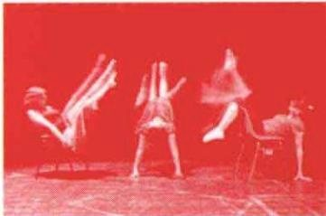
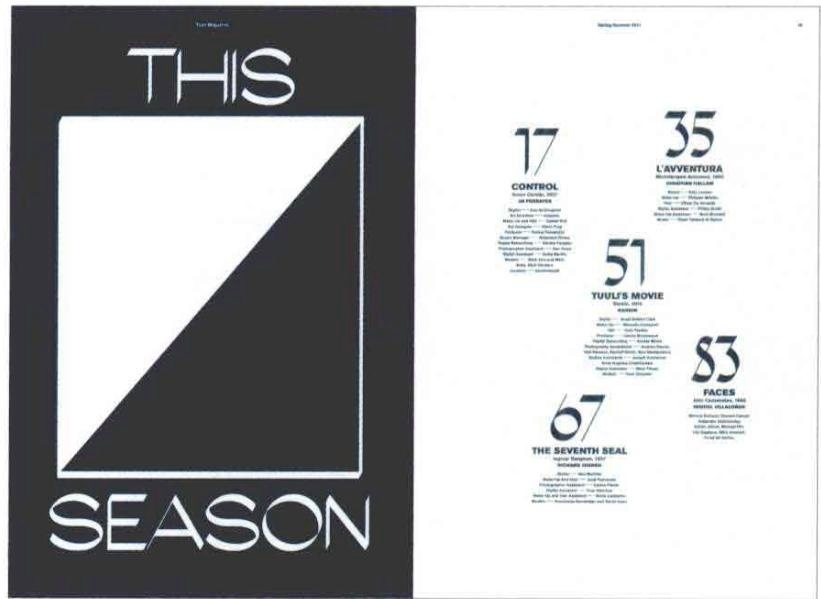
Study cues
- Find a piece of work and write down separately "what the materials give" and "what the treatment gives".
- In your last assignment, which piece of micro-level treatment was cut because of the deadline? What would change if you put it back?
版面設計的原理_設計前必須知道的事情
Scope. This book and 《設計入門教室 1：版面設計的原理》 come from the same course. The pages here set out the process as: organise the information, separate it into sizes, then make it readable through proximity and alignment. Gestalt psychology is its foundation. The images in the Classroom volume go further into stripes and contrasts of value; this volume puts more weight on drawing readers into a story.
Main ideas
- The basic process is to organise, visualise and arrange. If you only list the elements, the thing you most want to say gets blurred.
- People see the whole and the relationships first; this is Gestalt. Design should use this, not fight it.
- Proximity: things of the same kind (name and job title, address and phone number) go close together; unrelated things are pulled apart. A business card is the smallest exercise.
- Think about alignment and eye movement together. If people do not know where to look first, order has not yet been established.
- To turn readers from onlookers into participants, the layout should leave room for a story they can imagine, rather than filling every line.
Methods
- Before any small design, sort the elements into groups that must sit close together, and circle them in pencil.
- Make two versions of the same business card, "all scattered" and "grouped", and ask someone to find the phone number within three seconds.
- Make important things bigger and secondary things smaller. Do not use colour to rescue a layout with no difference in size.
- Understand the text first, then decide which two paragraphs should sit together.
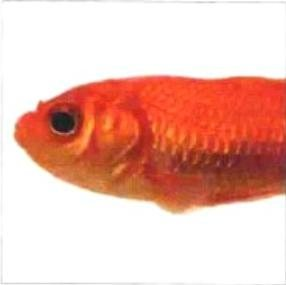
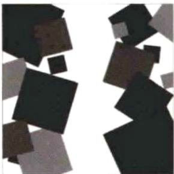
Study cues
- Rearrange your business card: which elements must sit close together, and which must be pulled apart?
- Use Gestalt to explain why people see the empty space in the middle of a group of squares before they see each individual square.
版式設計全攻略(佐)
Author: Tsuyoshi Sasaki
Scope. This is a handbook organised by format and number of columns: vertical text in one to five columns on a portrait page, horizontal text in one to four columns, plus unequal column widths, landscape formats and square formats. What it adds are choices that only arise when setting Chinese and Japanese: vertical and horizontal text feel different, and odd and even numbers of columns divide the page differently. It is not the mathematics of the Swiss grid, but "how many columns this format can take".
Main ideas
- Four or more columns of vertical text do not suit pages smaller than A4 or B5. The number of columns has to be decided together with the format.
- Horizontal text tends to feel friendlier than vertical text; but two columns of horizontal text on a portrait page make each line short, which is hard to read on a small page.
- Odd numbers of columns bring variety and freshness; even numbers suit dividing the layout in half and then in half again.
- Unequal column widths (for example three columns split as 2+1) add a rhythm that equal columns lack.
- Completely free mixing of images and text has no standard and is the hardest of all. If the leader lines on a diagram are not at a consistent angle, freedom turns into mess.
Methods
- Choose the format and vertical or horizontal text first, then pick one column type from the book. Do not try eight at once.
- When a single page has to tell a complete story, consider five or more columns or a square format; for long texts, go back to fewer columns.
- On black-and-white pages, use reversed backgrounds for contrast instead of relying on mid-greys.
- Use only one angle for leader lines across the whole page; use enlarged details only to sort out crowded annotations.
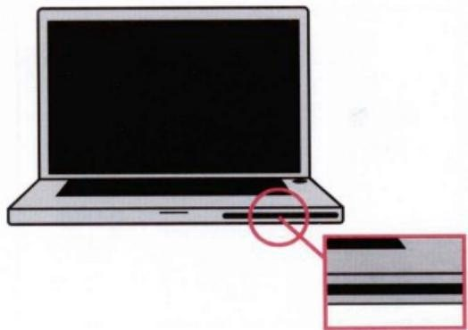
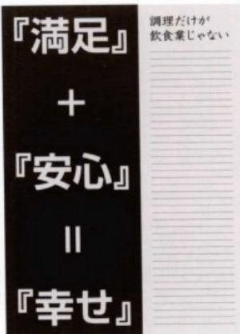
Study cues
- You need to set a long text on an A5 portrait page. Would you choose vertical or horizontal text? How many columns? Why avoid four columns of vertical text?
- Change three equal columns into "two columns plus one". What do you plan to put in the extra column?
進階理解版式設計
Scope. This book moves forward through questions and answers: each section has a before, a checklist of problems, an after and the theory. Topics include magazine inside pages, product pages and the relationship between image and text across a spread. It suits people who can already line things up but whose work still looks "scattered". Compared with introductory books, what it adds is continuity across the spread and the type-area ratio.
Main ideas
- Scattered elements, shapeless white space, loose images and inconsistent text direction are all the same kind of failure.
- A spread with text first and images second is hard to follow. People usually look at the image first and are then willing to read.
- If the left page is text and the right page is an image with no line or colour linking them, readers will think they are two separate articles.
- If the type-area ratio is too low and the white space is random, the page looks weak. White space should be small in amount and have a shape, not a gap left all the way round.
- Adjust visual strength to the content: a subtle subject should not be too strong; only subjects that need to be noticed should be turned up. Illustrations are usually stronger than photos, and portraits stronger than landscapes.
Methods
- When revising, go through the checklist item by item: white space, whether the images are grouped, text direction, and whether two people or two pages are linked.
- On a spread, default to image first and text second, then use a line to carry the eye across.
- Before shrinking the margins, ask whether the white space forms a shape. If it does not, shrinking will only make it more crowded.
- Choose a symmetrical or asymmetrical single column according to the amount of image and text; do not use the same set-up in every issue.
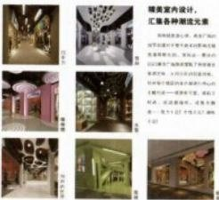
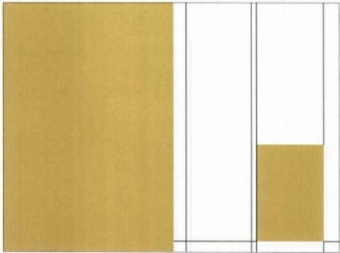
Study cues
- A spread currently has text on the left and an image on the right. Write down two things readers might misunderstand, and the one linking element you would add.
- Use visual strength to explain why a landscape photo is not a good main image for recruiting children.
版式設計：合適最好
Original title: Layout: Making It Fit: Finding the Right Balance Between Content and Space
Scope. The English title is Layout: Making It Fit. The whole book deals with one dilemma: too much space and too little information, or too little space and too much information. It is not a grid handbook. What it adds is treating "empty" and "crowded" as positive choices, used to convey luxury, urgency or credibility.
Main ideas
- What designers struggle with most is often uneven space. This book takes apart work at both extremes.
- Above all, avoid spreading things evenly. Impact appears only when you deliberately create too much space or too little.
- Space changes the tone: emptiness can mean luxury, crowding can mean liveliness or credibility, depending on the audience.
- Passively accepting a constraint and actively creating contrast are not the same thing. You need to be able to do both.
- Kress and van Leeuwen's ideas are used as a reminder: the structure of a layout is itself expressive, not just a container.
Methods
- For each design, first decide whether it is empty or crowded. If empty, increase the contrast and the cropping; if crowded, move secondary information into an appendix or a smaller group of type.
- Do not spread white space evenly around all four sides. Gather it into one area.
- When looking at cases, record the proportions: is the image or the caption bigger, and how is the square cropped?
- Use posters like those by Why Not Associates to ask yourself: is the crowding because there is too much content, or because it is the tone you want?
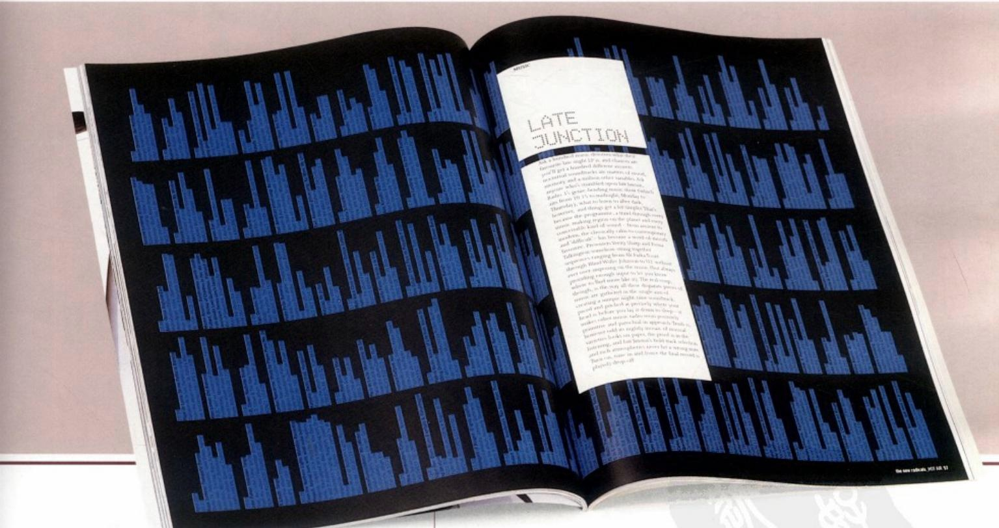
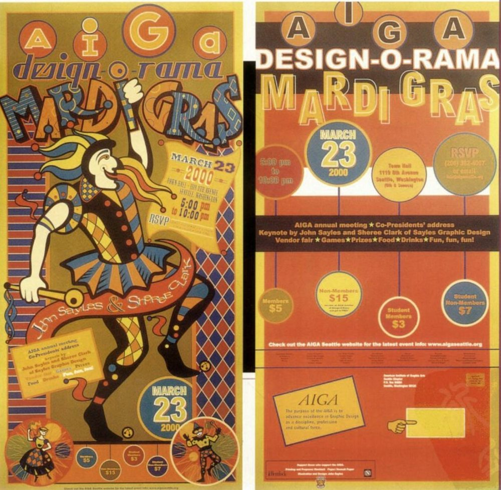
Study cues
- Using the same 200 words, make one layout that is "almost empty" and one that is "almost full". Describe the character of each in one sentence.
- Point to your most recent assignment where you spread white space evenly around all four sides, and change it so that only one area of white space remains.
版式設計從入門到精通
Scope. This is a tutorial with chapters by medium: principles, compositional elements, process, space, grids and colour, then newspapers, business cards, posters, magazines, books and outdoor advertising. Each medium is introduced with its characteristics, followed by examples. The copy marked afx365 later on is a different scan, and only that one has a chapter on packaging. The visible contribution of this copy is taking the same set of principles into specific newspaper and business-card layouts.
Main ideas
- Medium comes before style. Newspapers, business cards and posters differ in reading distance and amount of information, so their layout features cannot be copied from one to another.
- A business card can arrange its information on a diagonal, sit it on a dark background to keep it readable, and then let a reduced background pattern show its details.
- A magazine spread can use a tilted portrait to create movement, but the text needs its own base (for example a black block) so that the photo does not swallow the hierarchy.
- The colour chapter treats colour as wayfinding, space and rhythm, not as a final coat of paint.
- The value of the examples lies in "how this medium is usually laid out", not in the name of a particular hotel or property developer.
Methods
- When starting a project, turn to the "characteristics" page for that medium, copy down two constraints, and then start the layout.
- Make one version of a business card and of a poster on a dark background and one on white, and compare which one keeps its hierarchy.
- If the photo is tilted, do not tilt the text as well. Use a flat block of colour to bring the type back into line.
- In newspaper exercises, use only columns and headline hierarchy; poster-style full-bleed images are not allowed.
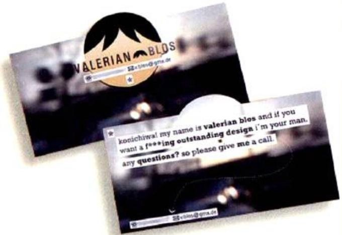
Study cues
- Write one constraint each for a newspaper inside page and a business card that the other cannot borrow.
- A tilted photo plus three lines of text: where do you put the text so that it does not tilt too?
版面設計網格構成
Author: Josef Müller-Brockmann
Scope. This volume also comes from Müller-Brockmann's writing on grids, but the scan shows theory rather than construction: perception, proportion and picture structure, with Proportions, Grid systems and Structure of pictures visible in the contents. What it adds is "why the parts must fit together". For how to derive the column width from the type size, still read 《平面設計中的網格系統》.
Main ideas
- How people see relationships is shaped by culture and viewing habits. The grid does not ignore this; it makes relationships something you can check.
- Alberti's definition is quoted to explain beauty: the parts fit each other so well that adding, removing or changing anything would make it worse.
- Max Bill's view is that beauty comes from function and also acts as function. Looking good is not a coat painted on after construction is finished.
- Proportion has its own chapter, and so does picture structure. The grid does not only manage text columns.
- If parts are deliberately set apart from each other, it must be a decision, not a failure to align.
Methods
- Check a page against Alberti's sentence: which element, if removed, would make the page better? If there is one, the parts do not yet fit.
- Draw the proportional relationships first (page, type area, images), then fill in the content.
- Analyse the internal structure of an image to see whether its divisions use the same proportions as the page grid.
- Compare this book's "fitting together" with Elam's "grouping": one says the whole cannot be added to or reduced, the other says elements should form groups.
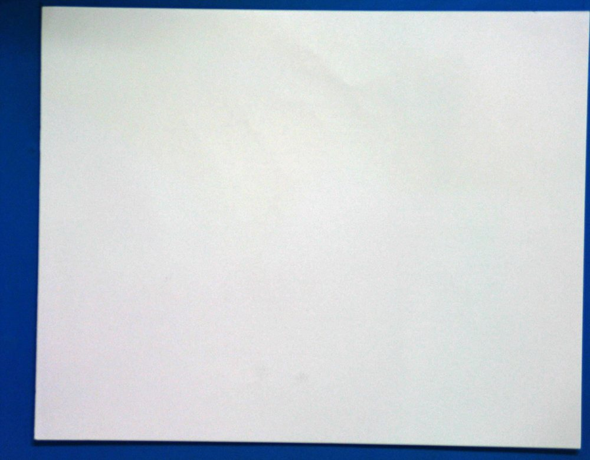
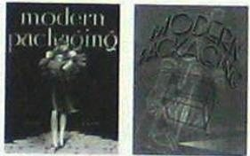
Study cues
- Look at a page of your own work by Alberti's standard: point out one element that could be removed to make the page better.
- Explain whether you would read this book or 《平面設計中的網格系統》 first, and what the second one adds.
版式設計原理_案例篇：提升版式設計的55個技巧
Scope. This book breaks layout into fifty-five either-or questions, with chapters on text, colour, images and web pages. Each question comes with a prompt, such as "which one looks more like the Italian flag?" or "which way should the person look?". It is good for quick self-testing, but it cannot replace a grid book.
Main ideas
- Judgement comes before technique. Every question forces you to give a reason for choosing between two versions.
- The colour chapter sets questions by impression: honest and steady, older people, delicious, Japanese style, seasons. With the wrong colour scheme, the message is wrong however stable the balance is.
- If the visual weight of a layout is all piled into the top half, it will not stand steady. This is caused by text and images together, and alignment alone cannot fix it.
- The image chapter practises jump rate, grouping, direction, squares, cropping, division, main and secondary images, and tone separately. People in photos should look into the page.
- The web chapter is about scanning: can the offer be seen at first glance, does the colour scheme help people find things, does the text force the eye to move around too often?
Methods
- After finishing each page, ask yourself one question in the style of the book, and write down why you did not choose the other version.
- For colour, change only one impression word (summer, Japanese style, trustworthy); do not chase three words at once.
- When cropping, write down "the element I most want to keep". If you kept the wrong one, crop again; do not try to fix it by adding text.
- In web designs, put the offer where the first glance falls, and move everything else into the second level.
Study cues
- Choose a set of colours for a summer jazz dance, and write down why you rejected another set.
- In two photos of people in conversation, which way should the faces point? If they face off the page, how does the reading break?
秩序之美_網頁中的網格設計
Original title: Ordering Disorder: Grid Principles for Web Design
Author: Khoi Vinh
Scope. Vinh writes about grids on screen, not a web version of print grids. He asks readers to read separate books on print and interface design as well. What this copy adds is three working principles and a sequence of steps from constraints and sketches to a specific website. The English edition is the one that explains clearly how the units are subdivided into sixteen columns. There is no HTML or CSS tutorial here.
Main ideas
- A grid solves problems first; looking good comes second.
- The grid is part of the user experience, not just visual decoration. It tells people where the information is.
- The simpler the grid, the more effective it is. Complicated overlaps are not forgiven just because they are on a screen.
- The benefits of print grids still apply: order, predictability, ease of adding new content, and different designs working well together.
- Mathematics such as the Fibonacci sequence is just one kind of order from history. Order on the web also has to cope with the number of columns changing with the width.
Methods
- Write down the constraints first: the types of content, the areas that must stay fixed (logo, search) and the optional columns.
- When sketching, decide the number of columns first, then which column the search box falls in. Do not draw the visual style first.
- If search should look like an empty line rather than a box, let it occupy a column rather than float outside the columns.
- Inside pages should not copy the portrait size from the directory page. Within the same grid, columns can play different roles.
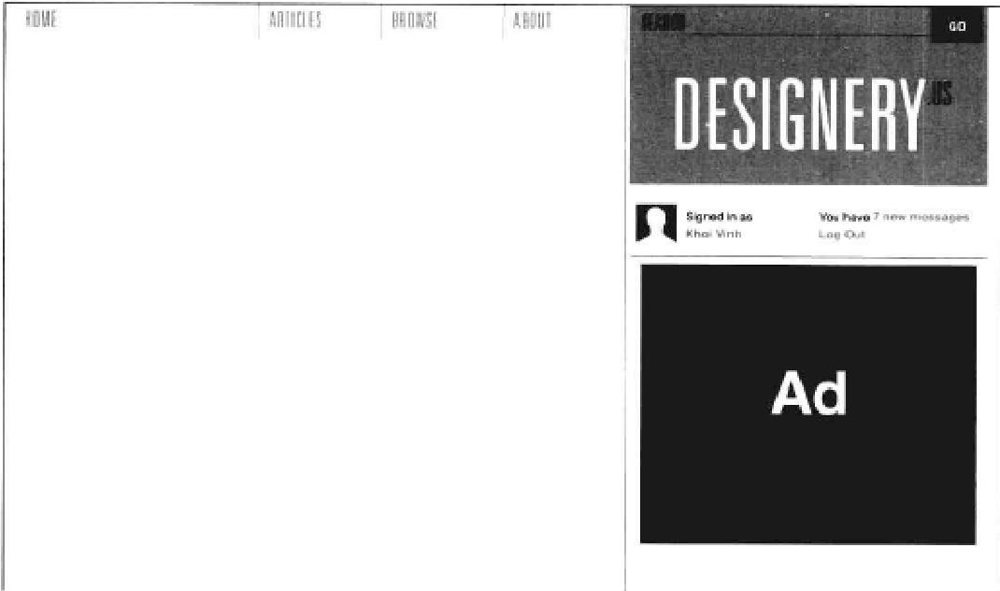
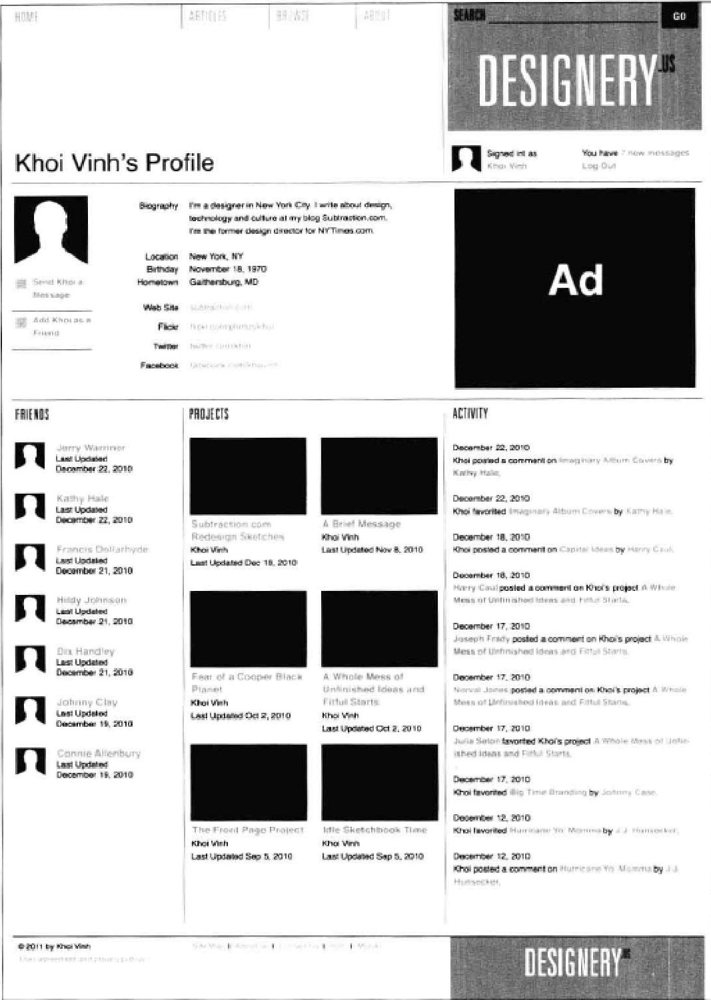
Study cues
- On a twelve-column desktop grid, which columns do the logo and the search box each take? Write down why you would not centre them.
- Use Vinh's three principles to critique a website where "every page has a different number of columns".
日本版式設計原理
Scope. This is the complete 《日本版式設計原理》, with four chapters on layout, text, colour and images, still using before-and-after comparisons. Compared with the p159 scan earlier, what it adds is the image chapter: how to leave an impression with very few images, how to bring food photography into a layout, and cropping and tone. The square coordinate grid and "do not make every image the same size" come up again in the layout chapter; there is no need to treat them as a second theory.
Main ideas
- Write down the impression the client wants first. The problems on the "before" pages (tilted images, fragmented white space, outlines sticking out) come from a lack of organisation, not a lack of decoration.
- If the opening date is the most important information on the flyer, it must really be the largest in the hierarchy, not just written in a corner.
- When images are limited, rely on cropping, tone and one main image, rather than shrinking the few images you have so that they "look like a lot".
- For subjects such as food, tone and cropping decide whether the page whets the appetite; that is a separate matter from the headline size.
- A very full layout can still work. The book mentions Takahashi's attitude: crowded material is no excuse for making a page tacky.
Methods
- On each page, fix only the one failure the book names: imbalance, no tension and release, an awkward eye path, a date that is not big enough.
- When there are fewer than three images, decide the cropping and tone first, before thinking about decoration.
- On a flyer, circle "the single most important fact" in pen, and check whether it is what you see first.
- When comparing with the p159 scan, only add the exercises from the image chapter; do not redo the square-grid exercises you have already done.
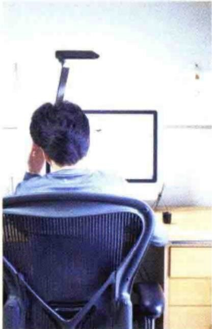
Study cues
- A restaurant page has only two photos. How do you still give it a main image and a secondary one?
- On an opening flyer, how would you rank the type sizes of the date, the shop name and the address?
版式設計法則
Scope. This book presents layout as a series of "rules": the tension of points, the weight, style and length of lines, bleed and cropping of images, five kinds of colour scheme, full-bleed layouts, division, symmetry, tilting, radiating and triangles. It is a dictionary of elements, not a system. Use it to expand your vocabulary, but do not apply every rule on the same page.
Main ideas
- A point can stay a point, line up into a line or cluster into a plane. The three states give the layout flexibility, cohesion or tension; they are not levels of decoration.
- The weight, solidity (solid or dashed) and length of a line each carry a mood. Curves against straight lines make the most obvious clash, because their forms are opposite.
- If the edges of a bleed image are too busy, you can add a black frame outside the bleed. It defines the boundary and also helps the image speak.
- The position, area, direction and collage of images change the mood of the whole page. If the direction does not flow, the layout will not "come alive".
- Colour schemes are grouped into same-hue, similar, adjacent, contrasting and complementary. Choose one relationship first, then think about style.
Methods
- Choose only one compositional rule per page (tilted, radiating or triangular), and write it in the corner of your sheet.
- In line exercises, change only one property: weight, solid or dashed, or length.
- After finishing a bleed image, look at all four edges. If one edge is messy, tidy it with a frame or by cropping; do not add corner ornaments.
- For colour, first rule out four of the relationships, keep one, and use it for the headline and the background.
Study cues
- Using the same three points, make three layouts in which they act as a "point", a "line" and a "plane". What mood does each suggest?
- Choose either a same-hue or a complementary scheme, and explain why the other one does not suit your subject.
版式創意大爆炸
Author: Wang Shaoqiang (compiler)
Scope. This is another Chinese edition in the Page Unlimited line, subtitled as a survey of global layout trends and cases, and again edited by Wang Shaoqiang. Compared with 《創意版式設計》, what this volume adds is how a single art book can use structure to carry an archive: sequences of thumbnails, the division into chapters, and re-editing someone else's book into a new one. It is still not a grid tutorial.
Main ideas
- A very thick book can show thirty years of change through "thumbnails of every old booklet"; the structure itself becomes the history.
- Re-editing an existing text (for example dividing Sontag's writing on images into chapters, adding photos and emphasising certain sentences) can produce a new book. Where the emphasis falls is an editorial decision.
- An artist's monograph has to include archives, sketches and informal photos, so the layout must hold the formal and the informal at the same time.
- The cases are mainly books, and the studios and clients are recorded, so that you can follow the method rather than the style.
- Trend collections go out of date. What lasts is "what quantity problem this structure solved".
Methods
- For each piece, write down the page count, how the chapters are divided, and which layer is a set of thumbnails or an index.
- Practise re-editing an existing article into three chapters, using only type weight to mark emphasis and adding no illustrations.
- If the content is an archive, design the index pages first and the reading pages second.
- Do not copy the surface of the Yayoi Kusama monograph; borrow only the rhythm of "formal pages plus sketch pages".
Study cues
- If you had thirty booklets to collect into one book, what structure would let people understand their order?
- If you cannot use colour for "emphasis", what two other typographic means could you use?
版式設計+2版式創意方案
Author: Duben Books (editor)
Scope. This is the sequel to 《版式設計+》, edited by Duben Books and translated by Ouyang Hui. The contents start with magazines and newspapers, then move on to single sheets and booklets. What it adds is periodical cases: how student journals, anniversary publications and community magazines keep one style through die-cutting, tri-folds and two languages. Do not repeat your notes on the book "stage" from the first volume.
Main ideas
- A free themed journal can change its theme every issue, but the layout needs enough flexibility for it to still look like the same publication.
- A bright main colour plus a die-cut cover is one way to make "modern" clear, but the inside text must still be readable.
- An anniversary book that picks out the number with die-cutting and divides its chapters with full tri-fold photos is clearer than one with lots of small subheadings.
- Even when printed in two languages, a community publication can keep a local character (the book's example is Nordic).
- When student work goes into a publication, there can be two platforms (digital and print), but there should be one set of layout rules.
Methods
- When designing a periodical, first decide three things that may change each issue and three that may not.
- For dividing chapters, try a large image spread once, rather than only colour bars.
- For bilingual copy, first decide which language is the main line; the other gives way through type size or leading.
- From this volume, collect only magazine structures; for book structures, go back to the first volume.
Study cues
- For a magazine that changes its theme every issue, list three layout rules you would not change.
- On a bilingual inside page, how much smaller should the secondary language be than the main one so that they do not compete?
版式設計風暴
Scope. Like 《版式設計風暴Ⅱ》, this book is a picture collection, and the scan is still mixed with magazine covers from 2006. The difference is that this volume's captions contain one practical piece of advice on commercial layout: how a product page can break out of the grid, and whether the person or the product should be brighter. Volume II has little more than watermarked images, so take this volume as the reference for method.
Main ideas
- An image can break out of the grid, but it should not be too large; otherwise the balance of the grid is lost and the break has nothing to contrast with.
- If the person is a supporting element, their saturation, brightness and contrast should all be lower than the product's, with cooler surroundings, so that the product holds attention.
- The cover collection still shows the cover-line hierarchy of consumer magazines, read in the same way as in Volume II.
- Pages without body text can only serve as samples. Do not learn Chinese typesetting from incomplete English covers.
- Breaking the grid is something you do once there is a grid. You need balance first before "not too large" means anything.
Methods
- On a product page, draw the grid first, then let only one image bleed, and limit the number of columns it takes.
- Lower the contrast of the image of the person by one step and keep the product image at its original contrast; put them side by side and check which is seen first.
- Use cool colours only in the supporting areas, never on the product.
- If two images on a page are both breaking the grid, cut down to one.
Study cues
- A page has a product and a model. Write down whose contrast you would lower, and the maximum number of columns the grid-breaking image may take.
- Explain why "breaking the grid" requires a grid in the first place.
[商業版式設計的方法]
Scope. This is a commercial introduction that runs from points, lines and planes and black, white and grey to how to start a layout: reading habits, levels of information, grouping and columns. It presents the grid as the way to make type, images and graphics consistent. It is not as deep as Samara or Müller-Brockmann, but its order is clear, which makes it suitable for your first commercial job.
Main ideas
- Readers usually go from left to right and top to bottom, and they see things that are close as a group and things that are far apart as separate. You can go against this, but you need a reason.
- Large and dark means important; small and light means secondary. White space has a shape too.
- Information levels should stop at three or four. Any more becomes another kind of mess.
- Before you start, write an outline: first, second and third-level headings and body text, like a tree.
- Columns and grids are the tools of order for commercial work. The book quotes the view that the grid makes it possible to coordinate type, images and graphics.
Methods
- Write the information tree first, then choose the type sizes. Without a tree, do not open the software.
- Mark the main and secondary elements in a black, white and grey draft; the hierarchy must work before colour goes on.
- Check the distances in each group: tight within groups, loose between groups.
- If you want to go against the reading direction, explain it with arrows or numbers, not just by tilting things.
Study cues
- Write four levels of information for a promotion. If you get to a fifth level, which level should be cut?
- Point to a design where you deliberately went against top-to-bottom reading, and write down why.
版式編排設計
Authors: Zhang Peng, Wang Zhimin (chief editors)
Scope. This follows a textbook format: definition, brief history, types and visual flow, text, graphics, applications. It describes current trends in layout as creativity, individuality, emotion and technology. It is useful for building vocabulary, but the case captions are dense, so you need to condense them into principles yourself.
Main ideas
- Layout covers type size, leading, the position of illustrations and tables, decoration and colour. Today it also includes the order and emotion it conveys.
- Creativity is divided into two kinds: aimed at the subject, and aimed at the form of the layout. Both need to happen together.
- Individuality is not chaos. The book discusses deliberate mystery, lack of rules or humour, used to make people stop.
- Visual flow has direction. Diagonal arrangements, letters along a slanted line and elements on a diagonal all strengthen movement and space.
- Body text is set in columns to break the stiffness of full-width text, and also to give headings more than one way to be inserted.
Methods
- For each assignment, write one sentence on "subject creativity" and one on "layout creativity". If you only have the first, the layout has not started yet.
- When you try a diagonal flow, there must still be a path that can be read to the end; do not aim only for movement.
- For long texts, set them full width first, then change to two columns, and compare where the headings can go.
- Use the brief history in the book to give your style an earlier reference point, so you do not just call it "modern".
Study cues
- For the same event, write one sentence of subject creativity and one sentence of layout creativity.
- Change a block of full-width text into two columns. Where are the new places you can now put the heading?
版式設計
Scope. This is 《版式設計》 from the "Century Designers" series (series editor Li Wei). The first two chapters cover principles: a clear theme, unity of form and content, and overall arrangement; then points, lines and planes are used to discuss space. Later, composition is grouped into types such as tilted, symmetrical, centre of gravity, triangular, juxtaposed, free and four-corner. It is a textbook of principles; the scanned examples are rather blurry, and the principles are clearer than the images.
Main ideas
- The purpose of layout is order, and making the theme stand out through a comfortable organisation. It relies on layering, main and secondary elements, visual order and logic.
- Enlarge the main subject to make it the visual centre; arrange different kinds of information as groups; add white space around the main subject so that the emphasis works.
- With only form or only content, a layout is empty. First understand the theme, then find a form that suits both the content and the feeling.
- Lines can divide space and create fields of force, while line frames contain space. Points and planes each build different layers.
- The composition types are a toolbox. The free type still needs a whole; it does not cancel the principles.
Methods
- Write the theme sentence first, then decide whether the visual centre is an image or a headline.
- Increase the white space around the main subject; do not emphasise the same spot with both a frame and a background colour.
- Do a division exercise with one kind of line: only divide, add no images, and see whether the space already has a main and a secondary area.
- Choose one composition type from the book and write down why it suits the content, not just why it looks good.
Study cues
- Emphasise a headline with "white space around it" instead of a frame. Write down which side you left open.
- Choose either a symmetrical or a centre-of-gravity composition, and explain how it speaks for your theme.
今日版式
Scope. This is a handbook of specifications and type: ISO and North American paper sizes, the point system, ciceros and picas, metric units, then type anatomy and classification (old style, transitional, modern, slab serif, grotesque, neo-grotesque). Only the second half moves on to page layout. What it adds is the language of measurement you need before you build a grid.
Main ideas
- The A series has a fixed aspect ratio, which stays the same when a sheet is folded in half. ANSI sizes have two aspect ratios, so enlarging or reducing them often means trimming off white space.
- Type classification is for choosing and pairing typefaces, not for memorising history. Serif, sans serif, script and decorative are the first level.
- Old style has low contrast and an inclined axis; transitional is more vertical; modern has very strong thick-thin contrast and horizontal serifs; slab serifs are thick and square.
- Among sans serifs, grotesques keep a few traits from the serif era (varying stroke weight, a lowercase g with a tail). Neo-grotesques remove them.
- A grid with an odd number of columns always leaves one column empty, whether you group it in twos or threes, and the rhythm comes from that empty column.
Methods
- Before starting, write down the paper series and aspect ratio. If it is not ISO, mark where you will need to trim when scaling.
- Choose one of old style, transitional or modern for the body text, and write down whether you want weak or strong contrast.
- For a sans-serif headline, first decide between grotesque and neo-grotesque; do not just write "sans serif".
- Try a five- or seven-column page, deliberately leave one column empty, and see whether a rhythm appears.
Study cues
- Explain why A4 folded in half twice keeps the same proportion, while an ANSI letter sheet often has to be trimmed when it is enlarged.
- Choose a category (old style, modern, neo-grotesque and so on) for the body text of a novel and for its cover title, and give your reasons.
印刷的終結：戴維·卡森的自由版式設計
Original title: The End of Print: The Graphic Design of David Carson
Author: David Carson
Scope. This book presents Carson's work and conversations; it is not a list of bad examples to set against the grid. The introduction explains that he wanted print, which had lost its hold on people, to speak again to readers who now live with television and radio. Its relationship to all the grid books before it is this: those books teach how order helps reading, while this one shows that even when order is disrupted, a thread must remain.
Main ideas
- The available techniques include changing typefaces and sizes, odd letterforms, extremely full or extremely empty pages, mistakes, disorder and enlarged conceptual words.
- Starting with magazines such as 《滑板走天下》, he reworked the relationships between headings, notes, body text, images and margins.
- He often starts from one enlarged concept word, which both carries the content and acts as a graphic.
- Surface chaos often still has direction. For example, a line drawn under the s of "sunday" hints at the theme.
- The interviews in the book link this approach to the word "deconstruction", but Carson's starting point was magazine editing, not a theoretical term.
Methods
- First lay out a page clearly on a grid, then break it in only one place, and leave a clue that can still be read (an underline, one oversized word, a patch of empty space).
- When copying, ask: if the chaos were removed, would the theme still be there? If not, it is only surface.
- The concept word must really come from the text; do not pick a good-looking English word first.
- Use empty pages and full pages in pairs. With only full pages, readers have nowhere to pause.
Study cues
- Take a short text and enlarge one of its words until it works as a graphic. The word must be the real point of the text. Write down which one you chose.
- What reading clue did you leave in your "chaos"? If you removed it, could the page still be understood?
國際平面設計基礎教程-GRIDS網格設計
Original title: Basics Design 07: Grids
Authors: Gavin Ambrose, Paul Harris
Scope. This is AVA's GRIDS. The chapters run from needs, elements and basics through types and applications to grids on the web. Compared with the 《國際版式設計基礎教程》 volume, what it adds is the "why": a grid makes decisions faster and gives even small things like page numbers a pulse. It also covers positive and negative space and how we read. Historical manuscripts and later newspapers are set side by side to show that the basic structure has not changed for centuries.
Main ideas
- The grid is the structure for every element. It improves precision and consistency, and it saves time spent hesitating.
- A page number placed in the margin can become an anchor for the whole design, not a figure added at the end.
- The wide margins of manuscript pages were originally for marginal notes; today they can become part of the design. An image that crosses the gutter creates movement.
- Medieval manuscripts and modern newspapers still share columns, margins and hierarchy. The medium changed, but the reading structure did not change completely.
- Framing the left page and bleeding the right page is a change of pace that urges the reader to turn the page. The perimeter is itself an element.
Methods
- When making a magazine, treat the page number as a graphic and check that it sits on the same line on every page.
- Compare a manuscript page with a newspaper page and circle three elements that are still the same.
- Spread exercise: frame the left page and bleed the right page. Change only this one thing and see whether movement appears.
- Mark the positive (content) and negative (empty) areas. The negative areas must have a shape.
Study cues
- Explain how a page number can become the "pulse" of a design rather than a decoration.
- Draw a spread: which page is framed and which bleeds? What action does the contrast urge?
國際平面設計基礎教程-LAYOUT版式設計(第2版)
Original title: Basics Design 02: Layout, 2nd edition
Authors: Gavin Ambrose, Paul Harris
Scope. This is the second edition of AVA's Layout, which states at the start: An AVA Book. It defines layout as the management of spreads and page space so that people can find information. Here the grid is one tool among several. Compared with the two GRIDS books, it adds that content comes before any golden rule, and that the same management applies to publications, websites, moving images and packaging.
Main ideas
- A good layout arranges complex information so it can be found. It must be both practical and attractive, whatever the medium.
- There is no single golden rule. A guide and an encyclopedia have different layouts because their content is different.
- The book quotes Josef Müller-Brockmann again: seeing the grid as order shows that the designer works to a plan. It then adds that the grid and order are still only tools.
- Layout can also spark ideas, not just tidy things up. The condition is that choices become easier, not more arbitrary.
- A page can be very calm: a simple page colour, two binding holes in the gutter, a text column as wide as the image. Or it can use a narrow head margin, a wide foot margin and a bleed on one side to create horizontal movement.
Methods
- First write down whether this content is closer to a guide or an encyclopedia, then decide the columns and hierarchy.
- When moving across media, carry over only the structure (hierarchy, margins, one bleed image), not the paper's proportions.
- Use column width to control images: when image width equals the text column, the series stays stable.
- Do not make the head and foot margins equal. Try a narrow head and wide foot first, and see whether the page is pushed upwards.
Study cues
- For an exhibition booklet and an encyclopedia entry, how would putting content first change the number of columns?
- Explain why this book calls the grid a tool. What does it cover, and what does the GRIDS volume cover?
版式設計-www.afx365.com
Scope. This is a model textbook for the higher education self-study exam, carrying the watermark of a prepress website. It moves from definitions, media and principles to grids and forms. The useful part is how it sorts layouts into a few types: aligned, centred, overlapping, scattered, tilted and free. It uses David Carson to show that a free layout can still leave clues. Do not use the watermarked pages to study letter-spacing.
Main ideas
- An aligned layout gathers images and text into blocks with straight edges. It suits rigorous content; its weakness is that it can easily feel dull.
- A centred layout is symmetrical along the centre line. It suits posters with little information and a single theme.
- Overlapping uses one thing covering another to show order, and the space takes on a sense of transparency.
- In a scattered layout, elements are spread like dots. Each local area has its own focus, but the whole still needs heavier and lighter parts.
- A free layout breaks the grid but must still leave reading clues. The book uses Carson's enlargement, added rules and reversed-out type as examples; it is not encouraging chaos on every page.
Methods
- Pick one of the six types first and write it in the corner of the page. Do not switch halfway.
- Use only aligned layouts for rigorous content; use centred layouts only for posters with very little information.
- If you use overlapping, mark what is in front and what is behind. The overlap must match the reading order.
- For a free layout, you must be able to draw a path with a pen that a reader can still follow.
Study cues
- Choose a layout type for a lab report and one for a party poster, and explain why they cannot be swapped.
- Draw a scattered layout and mark where the heaviest point is.
版式設計原理
Scope. This is a Japanese practical book that combines theory with before-and-after examples, and includes interviews with Masayoshi Nakajo and Mitsunobu Hosoyamada. The visible exercises range from magazine margins and toy shop flyers to map captions. The full-colour tutorial volume defines "type area ratio"; this volume adds diagnosis: text that gets trimmed off, faces running into the gutter, supporting information that looks like a heading, and a main product that is not enlarged.
Main ideas
- If the margins are crammed with text, a slightly off trim makes it unreadable and uncomfortable. The fore-edge must leave room for error.
- A magazine gutter swallows faces and text near the centre fold. Do not place important things against the fold.
- If supporting information is set as large as a heading, readers do not know where to start.
- Empty space must have a reason. An awkward patch of white under an illustration looks like a printing error.
- The main product (the yellow teddy bear in the book) must really come first in size. If the red frame is crooked, the zoning fails.
Methods
- Use the book's checklist: fore-edge, gutter, size of supporting text, meaningless white space, primary and secondary, dividing lines.
- Keep similar elements close, and give a photo and its caption a shared edge.
- Among eight product images, enlarge only one and keep the rest at similar sizes.
- If a map has too few buildings, use junctions and street names as landmarks instead. Do not invent landmarks that do not exist.
Study cues
- On a magazine spread, the model's face is close to the centre fold. Which way would you move the face?
- One of eight products is the lead item. Write down the size relationship between the lead item and the other seven, and one number of colours you would not use.
版式設計原理-全綵教程
Scope. This is a scan of the full-colour tutorial for the previous book, 《版式設計原理》. The before-and-after examples (toys, dialogues, cropping people) appear again. What it adds is the type area ratio: once the format is set, first fix the head margin, foot margin and the white space on all four sides. The share of the page taken by the type area directly changes how much information it holds and how it feels. William Morris's proportions are given, with a note that they do not suit square-character scripts such as Japanese and must be reset for the medium.
Main ideas
- A high type area ratio means more information and a busy page; a low ratio means less information and a quiet page. Set it according to the medium; do not centre every book the same way.
- For multi-page print, consider the fore-edge and gutter together with the binding. The type areas of facing pages should mirror each other, so one side is not wide and the other narrow.
- One ratio listed in the book for head, gutter, fore-edge and foot is about 1:1.5:2:3; Morris's English tradition is close to 1:1.2:1.44:1.73.
- Grouping does not mean walling content off with lines. It means letting things that are related in meaning visibly relate.
- Do not crop people across the top of the head; have faces look into the page; place photos of elders or teachers higher on the page.
Methods
- After setting the format, first write down whether the type area ratio is high or low, then measure the four margins. The foot margin is usually larger than the head.
- Before printing facing pages, check whether the gutter will swallow any text.
- Fix layouts where "the white space has no reason": gather the white together, or create rhythm through photo sizes.
- On a dialogue page, turn the two faces towards each other, not out past the binding.
Study cues
- For a poetry collection and a supermarket flyer, which has the higher type area ratio? How would you divide the four margins?
- Why does the book say Morris's proportions cannot be used directly for setting Japanese or Chinese?
版式設計實用手冊-www.afx365.com
Scope. This book approaches layout through paper and binding: letterpress paper, newsprint, offset paper, coated art paper and embossed paper, along with perfect binding, case binding, comb binding and saddle stitching. Only then does it build grids from proportions or from unit cells, and give solutions for newspapers, covers, packaging, advertisements and posters. The SUNI full-colour edition is another scan of the same handbook. This volume is clearer on paper, binding, and "placing a triangle or circle at the start of a long text".
Main ideas
- Paper and binding limit layout. Saddle stitching and perfect binding handle spreads and gutters completely differently.
- A grid can come from proportional relationships, or grow outwards from one unit cell. Both starting points are valid.
- A symmetrical grid is for balance, not for every commercial job.
- In a text-heavy magazine, place an accent shape (triangle, circle) where the information begins to lead the reader in, rather than decorating the whole page.
- When there are few images and a high image area ratio (about 65% in one example in the book), character comes from how the images are cropped, not from more borders.
Methods
- Choose the binding method before setting the gutter. Do not use the same numbers for the centre of a saddle-stitched and a perfect-bound book.
- When building a grid, state whether the starting point is a proportion or a unit cell.
- In long texts, place one geometric shape only at the start of each section, not at every paragraph.
- If a cover already has a high image area ratio, reduce the text and let the image speak.
Study cues
- A 16-page zine is saddle-stitched. How much gutter would you leave so the text does not fall into the staple fold? Give your reasons; you do not need to fix an exact number of millimetres.
- Using "growing a grid from a unit cell", explain whether your first unit is a line of text or an image.
版式設計實用手冊.SUNI視覺設計.全綵版
Scope. This is the SUNI full-colour edition of the previous practical handbook, with the same paper, binding and later chapters (periodicals, newspapers, covers, packaging, advertising). The application shown more clearly in this volume is the business card: staggered text can create rhythm. The page on accent shapes guiding long texts also appears again. If you keep only one of the two at hand, read the afx365 volume for paper and binding, and this volume for business cards and full-colour cases.
Main ideas
- Business card text that is fully aligned feels steady; staggered text feels light and lively. Staggered text still needs a hidden alignment.
- A periodical can build character with a cut-off corner, large white space, speech bubbles, enlarged type or diagonal images. Use only one at a time.
- The newspaper chapter stresses modules, traditional columns and rules. This is the order of long texts, not a poster technique.
- The packaging and advertising chapters link layout to consumer psychology: white space, tilt, primary and secondary must all serve "what is seen first".
- Full colour tempts you to add colour. Yet the strength of many examples in the book still comes from the columns and one accent shape.
Methods
- Make two versions of a business card, one flush and one staggered. On the staggered version, draw the hidden alignment line in pencil.
- For the periodical exercise, choose only one technique from the book (white space, speech bubbles or diagonals).
- For the newspaper exercise, check that the column width is already readable before adding rules.
- When comparing with the black-and-white scan, add only the business card exercise unique to this volume.

Study cues
- On a business card, which text can be staggered, and which must share an alignment line?
- Explain which kind of exercise you would use this volume for, and which the volume marked afx365.
版式設計從入門到精通-www.afx365.com
Scope. This is another scan of 《版式設計從入門到精通》. The chapters on principles, composition, grids, colour, newspapers, business cards, posters, magazines and books are all there, and the pages carry a prepress site watermark. What it adds is the packaging chapter: teapots, pasta, medicine bottle labels and CD sleeves. The earlier volume already covered diagonals and hierarchy with business cards and magazine portraits; this volume adds "how an abstract shape can both separate and connect text".
Main ideas
- Packaging layouts must keep the hierarchy on curved surfaces or small areas. Bottle labels and sleeves can rely on many type sizes even less than posters can.
- Text can be layered by position (centre right), weight and size, without first adding colour bars.
- One abstract shape can do two jobs: divide areas, and at the same time connect the separated text again.
- In a group of images, the one at the top left that is both large and at the visual starting point becomes the main image. Use size and position together.
- Do not copy watermarks and URLs into your assignments. Take only the hierarchy and grouping.
Methods
- Use only two type sizes and one abstract shape on a bottle label. Move any extra information to the back of the pack.
- Before drawing an abstract shape, mark what it separates and what it connects. If it can only do one of these, redraw it.
- In a three-image layout, put the largest at the top left and shrink the others, then check that the first glance feels stable.
- For packaging assignments, also make a flat net to confirm the hierarchy survives the folds.
Study cues
- Set two type sizes for a CD sleeve. Which one do the album title and the track list each use?
- Draw a shape that separates the heading from the body text while belonging to both. Say in one sentence how it connects them.
版面設計黃金法則
Scope. The core of this book is conversations with Japanese magazine art directors and their pages, including interviews with Mitsunobu Hosoyamada and Takahito Noguchi. Only after that come step-by-step sections on combining text, photography and feature openers. What it adds is judgement from the editorial floor: as styles become simpler, typefaces and details become stricter. It is not about grid formulas.
Main ideas
- Hosoyamada thinks styles are becoming softer and simpler, but simplicity demands stricter details. Choose the wrong typeface and the whole will not work.
- He hopes design can offer proposals for "how to live", as Muji does, rather than just dressing up consumer information. His references are Kohei Sugiura and Ikko Tanaka.
- Horizontal setting fits more characters per line than vertical setting. A striped background like the Stars and Stripes must give way to the text, or the blend that only horizontal setting can achieve will fail.
- An oversized number can be just rhythm and background; it does not have to indicate reading order. When you use one, it must not become annoying.
- Noguchi stresses that art directors talk with editors on the job. A layout rule that cannot enter the production process is just taste.
Methods
- Choose the typeface first, then add images. If the type is already off-putting, do not try to rescue it with pictures.
- In a horizontally set layout, count the characters per line. The background pattern should run parallel to the lines or clearly stay out of their way.
- If a large number is only background, lower its contrast so it is not read as the first piece of information.
- When reading the interviews, note one sentence that could change your next page, not the biography.
Study cues
- If your layout is already very simple, which two details are most likely to give you away?
- How would you design a giant page number so that it is not read as a heading?
破譯文字編排設計-www.afx365.com
Original title: Typography Workbook: A Real-World Guide to Using Type in Graphic Design
Author: Timothy Samara
Scope. This is another scan of 《破譯文字編排設計》, with the same principles for letters, words, paragraphs and pages, and a prepress site watermark on the pages. The earlier volume's images showed covers filled with oversized type and label hierarchy; this volume adds two finer examples: building a graphic from the counter of a lowercase g, and removing the "windows" (rivers) in justified text through type weight.
Main ideas
- Principles overlap and even contradict each other. No single book can cover all of typography; its aim is to be clear to readers at every level.
- An all-lowercase heading can still build hierarchy with italics, size and colour.
- The counter of a letter can extend into a graphic. The book's example plays with the g in "green", giving it a tail and horns.
- In justified text, when a window of white space opens in the middle of a line, a heavier weight hierarchy can cancel out that space with a different rhythm.
- Project records (such as the Royal College of Art's two-way text) remind you that principles must land on real commissions.
Methods
- Try a heading in all lowercase once, building hierarchy only with italics and colour, with no capitals.
- Choose a letter with a clear counter and let a graphic grow out of that counter.
- Justify a paragraph, circle the rivers, then change one weight or line break at a time until the window disappears.
- Divide the work with the earlier volume: go to that one for filled covers and labels, and keep counters and rivers for practice with this one.
Study cues
- Make a mark from the counter of a lowercase letter. Which letter did you choose, and what meaning does the extension carry?
- In a justified paragraph, circle one river and write whether you would change the line break or the weight.
秩序之美——網頁中的網格設計英文版
Original title: Ordering Disorder: Grid Principles for Web Design
Author: Khoi Vinh
Scope. This is the English edition of Ordering Disorder: Grid Principles for Web Design, with chapters on introduction, concepts, process, execution and conclusion. The Chinese edition already covers "solve the problem first, the grid belongs to the experience, the simpler the more effective"; this volume adds the arithmetic of units, and why he puts his talent into creating order. The back of the title page notes that one page is intentionally left blank.
Main ideas
- His story is that the world is messy when there are no constraints, so he defines design as building order for the work.
- The process chapter subdivides the columns further. The book's example is two columns of three units each, which ends up as a sixteen-unit grid.
- Units come before the look of the columns. Columns are made from units; you do not draw four lines first and explain them later.
- A page left intentionally blank is also a structural statement: emptiness is a decision, not a missing page.
- Use the English edition to check the steps in the Chinese edition. When principles conflict, follow the process he wrote down, not the fashion of a particular website screenshot.
Methods
- Set the smallest unit first, then build columns from units. Write sentences like "two columns of three units each" beside your sketch.
- Check that your number of columns divides evenly into your units. If it does not, change the unit rather than ending up with half-units.
- When reading the Chinese and English editions side by side, compare only the process: constraints, sketches, execution. Do not compare the translation style.
- For a blank page or blank column, write "intentional" in your notes so it is not mistaken for unfinished work.
Study cues
- Starting from one unit, explain how you reach sixteen units. Which step is "two columns of three units each"?
- Which of the three principles from the Chinese edition does your sixteen-unit sketch follow?
編排設計教程
Original title: Typographic Systems
Author: Kimberly Elam
Scope. This is the Elam volume that sets out all eight systems in full. The details of the axial system and the start and stop points of circles have already been practised in 《美國編排設計教程》. What this volume adds is a method of comparison: the same eight lines of text are set in axial, radial, dilatational, random, grid, transitional, modular and bilateral systems. It requires the type weight to stay the same at first; abstract elements and tone come in the second round.
Main ideas
- Letterpress and the grid are no longer the only forms of order. The eight systems handle shorter, more dynamic information, especially posters and covers.
- Axial hangs text left and right of one axis; radial spreads out from one focal point; dilatational spreads like concentric circles; bilateral pairs text symmetrically along an axis.
- The modular system builds with a set of standard units; the transitional system uses informal bands of layers; the random system has no obvious rules, so it needs even more control.
- The grid is only one of these eight, not the general name for all of them.
- Only when you compare with the same text can you see the differences. Change the copy, and you cannot tell whether the system or the content made the difference.
Methods
- Fix eight lines of text and one weight, and make axial, grid and bilateral versions first.
- Only in the second round add circles, lines or blocks of colour, and check whether they strengthen the system or start a new one.
- A random layout must still point to the next line to read; otherwise it is just scattered.
- Do not force radial or dilatational systems onto long texts. Keep those for short information.
Study cues
- Using the same eight lines, make one axial layout and one bilateral layout. How do the reading paths differ?
- Why does this book require one weight at first? If you started with bold, what comparison would you lose?
設計入門教室 1 版面設計的原理
Scope. This is the first volume of 《設計入門教室》, and teaches the same lesson as 《版面設計的原理：設計前必須知道的事情》: organising, proximity, alignment and eye movement. That volume stresses how readers enter the story; the images in this one go further, into visualisation: striped patterns, and lowering the brightness of the background so that a photo stands out through contrast.
Main ideas
- The three steps of design are organising the information, visualising the key points, then arranging. Visualising includes enlarging the key part of a date, or replacing a paragraph of address with a map.
- Gestalt: people see relationships first. Put similar things close together and unrelated things apart, and a business card becomes readable.
- Make important things large and unimportant things small. When everything around is noisy, even the loudest voice cannot be heard.
- For repetitions such as stripes, coloured lines are easier to pair with other styles than complex patterns. Repetition itself can be the content.
- A photo placed straight onto a busy background has no emphasis if the contrast is too low. Lower the background's brightness and the same photo stands out.
Methods
- Hand in exercises in three steps: a list of elements, the one act of visualisation, and the final arrangement. Without the second step, it is not finished.
- When using stripes as a background, limit yourself to two colours and one line spacing so the pattern does not overpower the heading.
- When a photo does not stand out, adjust the background brightness first rather than adding an outline.
- Divide the work with the previous volume: if you have already done proximity and alignment, use this one only for "contrast" and "repeated patterns".
Study cues
- Turn a paragraph of address into a map. Which words did you delete so that it counts as visualisation rather than just adding a picture?
- A photo on a patterned background is hard to see. Would you change the background, add an outline or add text first? Answer in this book's order.
超越平凡的平面設計 版式設計原理與應用
Original title: Before & After: How to Design Cool Stuff
Author: John McWade
Scope. This is McWade's book of principles, separate from his project book 《怎樣做好版式》. The sequence here is: take a visual inventory, find the focal point, objects and space, get as close as possible, the natural grid, take colours from the image, then choose a typeface that matches the image's texture. What it adds is a repeatable way to start; for complete designs of brochures and letterheads, still read the other book.
Main ideas
- The rules can be short: find the focal point, keep related things close, and respect the alignments already present on the page.
- Pick colours from the image with the eyedropper and arrange them by hue and value. These colours automatically match the image, because they were in it to begin with.
- Cool colours feel distant and rational; warm colours feel soft. Put the same image on different colours and what recedes into the background and what comes forward can swap.
- Type should match the texture of the image. When leaves are fine and dense, the rhythm of a serif face is closer than a plain sans serif. Glypha is given as an example of clear strokes and repeated shapes.
- The title page after the cover should be simpler and more secondary. Consistency comes from restraint, not from making the cover again.
Methods
- Start with a visual inventory: one focal point, one group of elements that must stay close, and two lines that already exist on the page.
- Take six colours from the main image, split them into a cool row and a warm row, and allow the heading only one of them.
- When choosing type, shrink the typeface into a small grey block and set it beside the texture of the photo. If they do not match, change the typeface; do not fix it with an outline.
- Make four simpler versions of the title page, and choose the one with one element fewer than the cover.
Study cues
- Take three colours from a photo and arrange them from dark to light. Which one would you use for the heading so it does not compete with the subject?
- The cover already has a logo, a photo and one sentence. Which one would you remove for the title page?